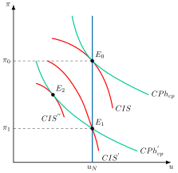
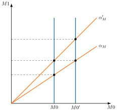
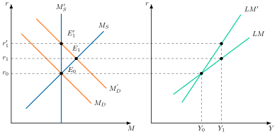
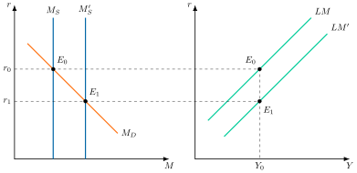
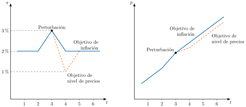
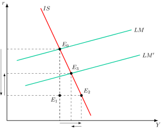
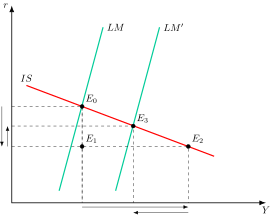
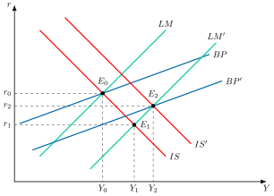

Apuntes para la oposición al Cuerpo de Diplomados Comerciales del Estado
6 Política monetaria (I): el diseño y la instrumentación de la política monetaria.
Tema pendiente de revisión. Este tema está publicado pero aún no lo he revisado a fondo: puede contener erratas o partes por pulir.
6.1 Introducción 1'
¿Por qué aceptamos un trozo de papel, o una simple anotación en una cuenta, a cambio de bienes reales? ¿Y quién se asegura de que mañana siga valiendo lo mismo? Detrás de ambas preguntas está el banco central. Con una sola variable, el tipo de interés, condiciona el coste de una hipoteca, la inversión de las empresas y el poder adquisitivo de los salarios. Cuando acierta, la inflación pasa desapercibida. Cuando se equivoca, la historia ofrece hiperinflaciones y depresiones. De ahí la pregunta que recorre la exposición: ¿qué debe perseguir un banco central y con qué herramientas?
La política monetaria es la actuación del banco central sobre la cantidad de dinero o sobre su precio, el tipo de interés, para alcanzar sus objetivos, hoy sobre todo la estabilidad de precios.1 Su estudio comprende el diseño, que fija los objetivos y la estrategia, la instrumentación, que elige los instrumentos para lograrlos, y la transmisión de los impulsos monetarios a la economía.2
Por consiguiente, el tema responde a tres preguntas:
¿Qué es el dinero y cómo se crea? Se estudian su concepto, los balances del banco central y de los bancos y el multiplicador monetario.
¿Qué debe perseguir el banco central y cómo hacer creíble su compromiso? Es el diseño: objetivos, reglas frente a discrecionalidad y estrategias.
¿Con qué instrumentos lo consigue, incluso cuando los tipos llegan a su límite inferior? Es la instrumentación, convencional y no convencional, que se cierra con el euro digital.
6.2 El dinero y su oferta 3'
Concepto y agregados
Siguiendo a John Hicks, “el dinero no se define de acuerdo a su naturaleza, sino de acuerdo a las funciones que desempeña” (Hicks 1967). En este sentido, se entiende por dinero aquellos activos que cumplan 3 funciones3:
Medio de cambio, generalmente aceptado para realizar transacciones y cancelar deudas.
Depósito de valor, que permite trasladar poder adquisitivo del presente al futuro.
Unidad de cuenta, patrón de medida que permite unificar el valor de las transacciones.
Los agregados monetarios son las medidas de la cantidad de dinero que agrupan activos según su liquidez. M1 suma el efectivo y los depósitos a la vista, y M3 añade activos menos líquidos, como los depósitos a plazo y los instrumentos negociables a corto plazo.4
Balances y multiplicador
Por otro lado, el sistema monetario está formado por aquellas instituciones que tienen capacidad de crear dinero, es decir, el banco central y los bancos comerciales.
La base monetaria, \(M0\), es el dinero que emite el banco central y la parte principal de su pasivo, y está formada por el efectivo en manos del público, \(E\), y las reservas de los bancos, \(R\), que son los depósitos que estos mantienen en el banco central. Los bancos comerciales tienen como pasivo los depósitos a la vista del público, \(D\), y mantienen una parte de ellos como reservas.5
El balance del sistema monetario se obtiene consolidando ambos balances, de modo que:
Pasivo, compuesto por la suma de efectivo más depósitos, que representan la oferta monetaria, M1.
Activo, que muestra cómo puede aumentar dicha oferta monetaria: acumulando reservas exteriores o expandiendo el crédito al sector privado o al gobierno.
| Banco Central | + | Bancos comerciales | = | Sistema monetario | |||
| Activo | Pasivo | Activo | Pasivo | Activo | Pasivo | ||
| RE | E | \(\cancel{\text{R}}\) | D | RE | E | ||
| AG | \(\cancel{\text{R}}\) | CR | \(\cancel{\text{ASP}}\) | CR | D | ||
| \(\cancel{\text{ASP}}\) | AG | ||||||
Dicha expansión de crédito se analiza mediante el multiplicador monetario, \(\alpha_{M}\). El multiplicador monetario es el número de unidades de oferta monetaria que genera cada unidad de base monetaria.6 Si se llama \(e\) a la proporción de efectivo sobre depósitos, \(E/D\), y \(q\) al coeficiente de reservas, \(R/D\), la oferta monetaria, \(M1=E+D\), y la base monetaria, \(M0=E+R\), se relacionan así: \[M1=\underbrace{\dfrac{e+1}{e+q}}_{\alpha_{M}}\cdot M0 \tag{6.1}\]
El multiplicador es mayor que uno y disminuye cuando aumentan \(e\) o \(q\): cuanto más efectivo retiene el público y más reservas mantienen los bancos, menos depósitos se generan a partir de cada euro de base monetaria.7 Desde esta óptica, el banco central controlaría la oferta monetaria a través de la base, siempre que el multiplicador fuera estable. Esta visión ha sido matizada en los últimos años.
La creación de dinero en la economía moderna
El matiz más influyente procede del Banco de Inglaterra. McLeay et al. (2014) explicaron que la mayor parte del dinero se crea cuando los bancos comerciales conceden préstamos, lo que desmiente dos ideas extendidas:
Los bancos no son meros intermediarios: no prestan los depósitos que ya tenían los ahorradores. Cuando un banco concede un préstamo, crea a la vez un depósito nuevo en la cuenta del prestatario, es decir, dinero nuevo. Cuando el préstamo se devuelve, ese dinero se destruye.
Los bancos no “multiplican” la base monetaria: las reservas no limitan la concesión de préstamos, porque el banco central las proporciona según las necesidades de los bancos, al tipo de interés que él mismo fija.
Ello no significa que la creación de dinero no tenga límites. Los bancos solo prestan si les resulta rentable, la regulación acota el riesgo que pueden asumir y, en última instancia, la política monetaria encarece o abarata el crédito.8 Por eso, en la práctica, los bancos centrales fijan el precio de las reservas, es decir, el tipo de interés, en lugar de su cantidad.9 Por eso se dice que la oferta monetaria es endógena: la cantidad de dinero no la fija el banco central, sino la demanda de crédito y de dinero al tipo de interés que él establece.10
6.3 Diseño de la política monetaria 8'
Diseñar la política monetaria consiste en decidir qué debe perseguir el banco central, cómo hacer creíble su compromiso, qué estrategia sigue para lograrlo y qué regla guía sus decisiones. Las estrategias han evolucionado desde el diseño tradicional en dos niveles hasta los objetivos directos de inflación, y hoy se debaten nuevas alternativas.
Justificación y objetivos
La política monetaria es efectiva a corto plazo porque los precios no son plenamente flexibles: una variación del tipo de interés nominal que no va acompañada de una variación proporcional de la inflación altera el tipo de interés real, que es el que guía las decisiones de consumo e inversión.11 Que sea efectiva no implica que deba perseguir cualquier objetivo. La regla de Tinbergen (1952) establece que, para alcanzar \(n\) objetivos independientes de política económica, se necesitan al menos \(n\) instrumentos independientes. Es necesario, por tanto, especificar qué objetivo se persigue, porque el banco central dispone esencialmente de un instrumento, el tipo de interés: la estabilidad real, medida por el desempleo o por el output gap, la diferencia porcentual entre la producción efectiva y la potencial, o la estabilidad nominal, es decir, la de los precios.
Existe un amplio consenso en que el objetivo debe ser la estabilidad de precios, porque la inflación tiene costes y la política monetaria no puede elevar de forma permanente la producción.12
En la zona del euro, el artículo 127.1 del TFUE fija como objetivo principal del Sistema Europeo de Bancos Centrales mantener la estabilidad de precios y, sin perjuicio de ello, apoyar las políticas económicas generales de la Unión. Como el Tratado no define qué es la estabilidad de precios, lo concreta la estrategia del BCE. Desde la revisión de 2021, es un objetivo de inflación del 2 % a medio plazo y simétrico, de modo que las desviaciones al alza y a la baja se consideran igual de indeseables. La evaluación de la estrategia de 2025 lo mantuvo, y recordó que ese margen protege frente al riesgo de deflación y aleja los tipos de interés de su límite inferior efectivo, el nivel por debajo del cual el banco central no puede bajarlos sin que los agentes prefieran mantener efectivo, que rinde cero (Banco Central Europeo 2025).13
Reglas frente a discrecionalidad: la inconsistencia dinámica
La credibilidad del banco central, el grado en que los agentes creen que cumplirá lo que anuncia, no es gratuita. Kydland y Prescott (1977) mostraron que una autoridad que decide en cada momento lo mejor para ese momento, es decir, con discrecionalidad, puede acabar en un resultado peor que si se hubiera atado las manos. Es el problema de la inconsistencia dinámica: una política es dinámicamente inconsistente cuando el plan que hoy es óptimo deja de serlo mañana, una vez que los agentes han actuado de acuerdo con él.14 Barro y Gordon (1983) aplicaron esta idea a la política monetaria.
Gráficamente, en un plano de inflación, \(\pi\), y desempleo, \(u\), como el de la Figura 6.1, se representan las curvas de Phillips a corto plazo, \(CPh_{cp}\), las curvas de indiferencia social de la autoridad, \(CIS\), y la tasa natural de desempleo, \(u_{N}\). Así:
Con discrecionalidad, los agentes, que tienen expectativas racionales, anticipan el incentivo de la autoridad a crear inflación. La economía se sitúa en \(E_{0}\), con el desempleo natural y una inflación elevada, \(\pi_{0}\). Es el sesgo inflacionista.
Si la autoridad se compromete de forma creíble con una regla de baja inflación, la economía alcanza \(E_{1}\): el mismo desempleo con una inflación menor, \(\pi_{1}\), y una curva de indiferencia social más cercana al origen, es decir, más bienestar.
Sin embargo, una vez fijadas las expectativas en \(E_{1}\), la autoridad tiene incentivos a provocar una inflación sorpresa que lleve la economía a \(E_{2}\), con menos desempleo. Como los agentes lo anticipan, la regla no es creíble y la economía vuelve a \(E_{0}\).

La discrecionalidad, por tanto, no consigue reducir el desempleo y solo añade inflación.15
Para resolver este problema se han propuesto tres soluciones:16
Reglas: comprometerse con una regla de política monetaria, como propusieron Kydland y Prescott.
Reputación: Barro y Gordon mostraron que, en un juego repetido, la reputación puede sustituir a las reglas formales.
Delegación: Rogoff (1985) propuso delegar la política monetaria en un banco central independiente, con una aversión a la inflación mayor que la de la sociedad, a costa de estabilizar peor la producción ante perturbaciones de oferta.17
Evolución de la estrategia
Diseño tradicional: estrategia a 2 niveles
El diseño tradicional aplica la regla de Tinbergen vista antes y se organiza en dos niveles, como se observa en el Tabla 6.1:
Primer nivel, N.1:
Objetivo final, OF, las autoridades se marcan un objetivo final de política económica (sobre el que el BC tiene poco control directo), que puede ser entre otros:
Pleno empleo, \(u\), sobre el que existe cierto consenso acerca de la nula efectividad de la política monetaria en el largo plazo.
Control de la inflación, \(\pi\), que suele ser el principal objetivo hoy en día de las autoridades monetarias de las economías desarrolladas.
Mantenimiento de un tipo de cambio fijo, \(TC\), con el que, en un contexto de elevada movilidad de capitales como el actual, el banco central pierde el control de la política monetaria, que queda supeditada al objetivo de mantener un tipo de cambio fijo (“trinidad imposible”).
Objetivo intermedio, OI, variable que el banco central controla mejor que el objetivo final, que se observa antes y que guarda con él una relación estable. Es necesario porque, si la autoridad monetaria pudiera influir directamente sobre los objetivos finales, no habría ningún problema para diseñar la política monetaria. Sin embargo, el control sobre el objetivo final no es perfecto, por lo que se establecía un objetivo intermedio (tipos de interés a largo plazo, \(i_{lp}\), oferta monetaria, \(M1\), crédito bancario, \(CR\), tipo de cambio, \(TC\), etc.), sobre el cual sí se conseguía tener un control más o menos perfecto, y que se creía estrechamente relacionado con el objetivo último.
Así, cuando el objetivo intermedio es un agregado monetario y la variable operativa es la base, la relación entre ambos depende del multiplicador monetario, y la relación entre el objetivo final y el intermedio, de los mecanismos de transmisión.
Segundo nivel, N.2, las autoridades tratan de controlar estrechamente el objetivo intermedio a través de una variable operativa, que a su vez manejan con sus instrumentos:
Variable operativa, VO, la que el banco central controla casi por completo y a diario con sus instrumentos (tipos de interés a corto plazo, \(i_{cp}\), base monetaria, M0, liquidez bancaria, LqB, etc.).
Instrumentos, I, esto es, coeficiente legal de caja, CLC, operaciones de mercado abierto, OMA, y facilidades de crédito y de depósito, FCD.
| N.2 | N.1 | ||
|---|---|---|---|
| I | VO | OI | OF |
CLC OMA FCD |
\(i_{cp}\) M0 LqB |
\(i_{lp}\) M1 \(CR\) TC |
\(u\) \(\pi\) TC |
Si se analiza la elección del objetivo intermedio de la política monetaria desde una perspectiva histórica se observan las siguientes tendencias:
En los años 60, donde dominaban las tesis keynesianas, la política monetaria se diseñaba a través del control de los tipos de interés.
En los años 70, los shocks de naturaleza real hicieron que el sector monetario fuera más estable que el real, por lo que la política monetaria se diseñó a través del control de los agregados monetarios. Es la lógica que formalizó Poole (1970), que se estudia en la instrumentación.
A partir de los 80, el sector monetario se ha vuelto más inestable debido a los procesos de innovación financiera, por lo que los bancos centrales de la mayor parte de las economías desarrolladas han adoptado una estrategia mixta de tipos de interés y agregados monetarios con el objetivo primordial de controlar la inflación.
La ruptura de la relación entre los agregados monetarios y la inflación ilustra la ley de Goodhart (1975): “cualquier regularidad estadística observada tiende a desmoronarse en cuanto se ejerce presión sobre ella con fines de control”.18 Al convertir un agregado en objetivo, los agentes cambiaron su comportamiento y la relación que justificaba su elección dejó de cumplirse.
Diseño actual: objetivos directos de inflación
El diseño tradicional a dos niveles presenta una serie de problemas:
El control sobre la variable fijada como objetivo intermedio puede ser imperfecto debido a:
Retardos en la detección, en la reacción y en los efectos.
Conocimiento imperfecto de los mecanismos de transmisión y del estado de la economía.
Relación inestable entre el objetivo intermedio y el final.
Problemas de incentivos que dan lugar a abusos cortoplacistas de la política monetaria como los problemas de inconsistencia dinámica.
Por tanto, los problemas relativos al monetary targeting, en el que el banco central se comprometía con una tasa de crecimiento de un agregado monetario, han motivado que los bancos centrales se fijasen a partir de los 90 como objetivo final la estabilidad de precios en el medio/largo plazo19 estableciendo regímenes de objetivos directos de inflación (inflation targeting) que, en su versión flexible, que es la habitual, también atienden a la estabilización de la producción a corto plazo (output smoothing). En un régimen de este tipo, el banco central anuncia una meta numérica de inflación a medio plazo, orienta su política a alcanzarla y rinde cuentas de su cumplimiento. Ya no descansa en un único objetivo intermedio: el banco central atiende a un conjunto amplio de indicadores, y no solo a los agregados monetarios (Mishkin 2015). Nueva Zelanda fue pionera en 1990 y la siguió Canadá en 1991. El Reino Unido en 1992 y Suecia en 1993 la adoptaron tras abandonar sus compromisos cambiarios.
De esta forma, el objetivo final elegido de inflación, que se mide por la variación porcentual de un índice de precios de consumo, en la zona del euro el IAPC, debe ser:
Fácilmente verificable, para comprometer públicamente a la autoridad monetaria.
Flexible, para permitir a la política monetaria adaptarse a shocks inesperados.
Creíble y transparente, para constituir una buena ancla para las expectativas de inflación. La credibilidad se consigue con las soluciones vistas para la inconsistencia dinámica: reglas, reputación y delegación en un banco central independiente.
En suma, el inflation targeting tiene ventajas como:
La comunicación, transparencia y credibilidad facilita el anclaje de expectativas y reduce potenciales problemas de inconsistencia dinámica.
Permite la coordinación de los agentes que fijan precios y salarios, así como de los agentes que operan en los mercados financieros.
No le afecta la inestabilidad de la demanda de dinero causada por la innovación financiera, porque no depende de un agregado monetario. Como el instrumento es un tipo de interés, la oferta monetaria se adapta a la demanda de dinero, como se vio al estudiar la creación de dinero.
La regla de Taylor
Si la regla es la solución a la inconsistencia dinámica, queda saber qué regla seguir. La más conocida es la regla de Taylor.20
Propuesta por Taylor (1993), contiene dos elementos:
El tipo de interés nominal, \(i_{t}\), crece en una proporción mayor que 1 a 1 con la inflación, \(\pi_{t}\), por lo que el tipo de interés real crece cuando la inflación crece.
El tipo de interés crece cuando el output, \(Y\), está por encima de lo normal, \(Y^{n}\), y caiga cuando está por debajo de ese nivel.
Taylor propuso una regla lineal con la inflación y en desviaciones porcentuales de la producción respecto a su nivel natural (aplicando logaritmos), que toma la siguiente forma: \[i_{t}=a+\phi_{\pi}\cdot\pi_{t}+\phi_{y}\left(y_{t}-y^{n}_{t}\right),\quad\phi_{\pi}>1,\;\phi_{y}>0 \tag{6.2}\] donde \(a\) es una constante y \(\phi_{\pi}\) y \(\phi_{y}\) los parámetros de reacción de inflación y output gap respectivamente. La condición \(\phi_{\pi}>1\) recoge el principio de Taylor: el tipo nominal sube más que la inflación, de modo que el tipo real aumenta.21
Además, si se llama \(r^{n}_{t}\) al tipo de interés natural, el tipo real con el que la producción coincide con su nivel natural, \(Y_{t}=Y^{n}_{t}\) (output gap nulo), y que sería el de equilibrio con precios y salarios flexibles, entonces 6.2 es equivalente a \[i_{t}=r^{n}_{t}+\pi^{*}_{t}+\phi_{\pi}\left(\pi_{t}-\pi^{*}_{t}\right)+\phi_{y}\left(y_{t}-y^{n}_{t}\right) \tag{6.3}\] donde \(\pi^{*}_{t}\equiv\left(r^{n}_{t}-a\right)/\left(\phi_{\pi}-1\right)\), es el objetivo de inflación del banco central22.23
Esta forma de presentar la regla revela que el banco central deberá aumentar el tipo de interés por encima de su nivel de equilibrio en el largo plazo en respuesta a una inflación por encima de su objetivo y a un output que exceda su nivel natural. Las reglas de tipo de interés de la forma 6.2 y 6.3 se conocen como reglas de Taylor (Romer 2019).
En general, las estrategias de política monetaria basadas en un objetivo de inflación tienen el tipo de interés natural estimado como una referencia relevante.
La importancia de este concepto radica en que, cuando el tipo de interés real se sitúa por encima de su nivel natural, la DA es demasiado baja en relación con la capacidad productiva de la economía (se produce un output gap negativo, lo que produce presiones deflacionistas).
Así, lograr que la inflación se iguale a su objetivo en todo momento requiere que el tipo real se iguale siempre a su nivel natural. O, lo que es lo mismo, el tipo de interés nominal ha de igualarse al tipo de interés natural más el objetivo de inflación, de forma que el BC ajuste el tipo nominal siguiendo las fluctuaciones en el tipo natural.
Como crítica, algunos autores señalan que en realidad los bancos centrales no se guían por la inflación observada, sino por las predicciones de inflación (por la existencia de retardos). De ahí que Clarida et al. (2000) estimasen funciones de reacción de la Reserva Federal con expectativas racionales, condicionadas a toda la información disponible en el momento \(t\): \[i_{t}=r^{n}_{t}+\pi^{*}_{t}+\phi_{\pi}\left(\mathbb{E}\left(\pi_{t+1}\right)-\pi^{*}_{t}\right)+\phi_{y}\left(\mathbb{E}\left(y_{t+1}\right)-y^{n}_{t}\right) \tag{6.4}\]
Estos autores encuentran que, desde la llegada de Volcker en 1979, la Reserva Federal responde a la inflación esperada con un coeficiente mayor que uno, mientras que antes era menor que uno, es decir, antes no cumplía el principio de Taylor. En su especificación, la Reserva Federal responde a la predicción de inflación más que a la inflación contemporánea.
La regla de Taylor no es solo un artificio teórico. La Reserva Federal compara en su informe semestral de política monetaria el tipo de interés oficial con las prescripciones de varias reglas sencillas, entre ellas la de Taylor (1993), y los analistas la usan para juzgar si el tipo vigente está por encima o por debajo del que sugeriría la regla. Además, en el modelo neokeynesiano de tres ecuaciones, una regla de este tipo cierra el sistema junto con la curva IS dinámica y la curva de Phillips neokeynesiana.24
Nuevos debates
Tras la crisis financiera de 2007-2008, el diseño de la política monetaria se ha revisado en dos direcciones.
Una línea de revisión es la estabilidad financiera. La estabilidad de precios no garantiza por sí sola la estabilidad financiera, y unos tipos bajos y estables pueden alimentar burbujas de activos. De ahí el debate sobre si el banco central debe “apoyarse contra el viento”, subiendo los tipos ante un auge del crédito, o dejar esa tarea a la política macroprudencial, que usa instrumentos regulatorios, como los colchones de capital o los límites a la relación entre préstamo y garantía, para contener el riesgo del sistema financiero en su conjunto. Blanchard y Summers (2017) defendieron que la regulación financiera y la política macroprudencial deben ser la primera línea de defensa y se mostraron escépticos con el uso del tipo de interés, que actúa con retraso y empeora la posición de los deudores.
La otra línea busca alternativas al objetivo de inflación, pensadas sobre todo para escapar del límite inferior de los tipos:
El objetivo de nivel de precios obliga a compensar las desviaciones pasadas. Eggertsson y Woodford (2003) mostraron que, cuando los tipos están en su límite inferior, un compromiso con un objetivo de nivel de precios se acerca mucho a la política óptima, porque eleva las expectativas de inflación.25
El objetivo de inflación media, que exige que la inflación promedie la meta en un periodo, compensando solo dentro de él las desviaciones. La Reserva Federal lo adoptó en 2020 y lo abandonó en agosto de 2025 para volver a un objetivo de inflación flexible.
El objetivo de PIB nominal, en el que el banco central fija una meta para la suma del crecimiento real y la inflación.26
A ellos se suman la posible incorporación del clima a las decisiones del BCE y el riesgo de dominancia fiscal con niveles de deuda pública elevados.27
6.4 Instrumentación de la política monetaria 7'30"
Esquema operativo y elección del instrumento
Por otro lado, la capacidad de la autoridad monetaria para alcanzar el objetivo final, bien mediante una política reglada o discrecional, dependerá de los instrumentos de los que disponga, aquellas variables que son controladas directamente por el banco central y que se utilizan para la implementación de la política monetaria.
La elección del instrumento dependerá del control que tenga sobre el mismo la autoridad monetaria y de la información que tenga sobre sus efectos.
El esquema operativo describe el recorrido de la política monetaria desde los instrumentos hasta los objetivos finales. Los instrumentos son las variables que el banco central controla directamente, como el tipo de interés de sus facilidades, el coeficiente de reservas o la composición de su balance. Con ellos fija una variable operativa, que en la práctica es un tipo de interés interbancario a un día o una medida de las reservas bancarias. Entre la variable operativa y los objetivos finales pueden situarse objetivos intermedios, como el crecimiento de un agregado monetario, que informan de la evolución de los objetivos finales antes de que se publiquen sus datos (Walsh 2010).
En este contexto, Poole (1970) realizó un importante estudio sobre la elección óptima del instrumento de la política monetaria, es decir, si el banco central debe fijar el tipo de interés o la cantidad de dinero, que en la estrategia a dos niveles equivale a elegir el objetivo intermedio. Basó su análisis en que la tarea principal del banco central debía ser minimizar las fluctuaciones del output y no las del tipo de interés. En este sentido, la elección dependería de la inestabilidad relativa de los sectores real y monetario:
Sector monetario más inestable que el real, es decir, los shocks son de carácter nominal (se mueve la LM), habrá que controlar (mantener constantes) el tipo de interés (keynesianismo).
Sector real más inestable que el monetario, es decir, los shocks son de naturaleza real (se mueve la IS), habrá que controlar (mantener constantes) los agregados monetarios (monetarismo).
Formalmente, fijar el tipo de interés es preferible cuanto mayor es la varianza de las perturbaciones de la demanda de dinero, más inclinada es la curva LM y más plana es la curva IS.28 Si además el multiplicador monetario sufre perturbaciones, fijar la base monetaria resulta todavía menos atractivo.29 La inestabilidad de la demanda de dinero que trajo la innovación financiera explica que hoy los bancos centrales utilicen como variable operativa un tipo de interés a corto plazo.
Instrumentos convencionales: el marco del Eurosistema
Los instrumentos cuantitativos modifican el coste y volumen de la financiación ya que influyen sobre la base monetaria y los tipos de interés a corto plazo.
Política de reservas mínimas o coeficiente de caja
Es el instrumento que obliga a las entidades a mantener en sus cuentas en el banco central un saldo mínimo de reservas igual a un porcentaje de determinados pasivos. En el Eurosistema el coeficiente es del 1 % de determinados pasivos, principalmente depósitos, y desde septiembre de 2023 estas reservas no se remuneran (Banco Central Europeo 2023).
En la visión del multiplicador, una elevación del coeficiente de caja reduce la oferta monetaria a través de la ecuación 6.1.
El coeficiente de caja es un instrumento muy poderoso por su coactividad y precisión, pero no es viable variarlo con frecuencia en períodos cortos de tiempo por las dificultades que podría generar a las entidades financieras30. Por esta razón se considera un instrumento de acción discontinua, que se fija para un período relativamente prolongado, siendo complementado con las operaciones de mercado abierto y con las facilidades de crédito y depósito. Por eso hoy es un instrumento secundario.
Política de mercado abierto
Las operaciones de mercado abierto son las que el banco central realiza por iniciativa propia para inyectar o drenar liquidez. Pueden ser temporales, mediante préstamos con garantía de activos o repos (repurchase agreements)31, o en firme, mediante compras o ventas definitivas de activos.
En el BCE, la más importante es la operación principal de financiación (main refinancing operation, MRO), semanal y a una semana. Junto a ella están las operaciones de financiación a plazo más largo (LTRO), las de ajuste y las estructurales.
Se efectúan mediante subastas a las que solo pueden acudir las entidades de crédito autorizadas. Antes de 2008, en ellas las entidades expresaban las cantidades de liquidez y los tipos de interés que estaban dispuestas a asumir. Desde octubre de 2008, el BCE las realiza a tipo fijo y con adjudicación plena.
A su vez, las operaciones de mercado abierto pueden producir 2 efectos:
Efecto cantidad: la operación altera la base monetaria en su importe, y su efecto sobre la oferta monetaria depende del multiplicador monetario.
Efecto sobre los tipos de interés: si la compraventa llevada a cabo por el banco central tiene por objeto valores de renta fija, entonces la operación influye no solo sobre la base monetaria sino también sobre la cotización de los valores, lo que afecta al tipo de interés efectivo, \(r_{e}\): \[r_{e}=\dfrac{c}{P_{b}}\cdot100 \tag{6.5}\] donde \(c\) es el cupón, en porcentaje del nominal, y \(P_{b}\) el precio del bono, también en porcentaje del nominal. La relación inversa entre precio y rentabilidad hace que las compras del banco central, al subir el precio, reduzcan el tipo de interés.
En definitiva, las operaciones de mercado abierto constituyen el mejor instrumento de política monetaria por 3 razones:
El banco central puede comprar/vender grandes cantidades o simplemente pequeñas dosis.
Pueden cambiar fácilmente su dirección sin generar dificultades a las entidades financieras.
Sirven para señalizar la orientación de la política monetaria.
Facilidades de crédito y depósito
Se trata de la realización de transacciones a precios determinados por el banco central –no de mercado–, de forma que este establece unas condiciones fijas y son los bancos comerciales los que deciden cuándo y en qué medida utilizar este instrumento:
Facilidades de crédito, se trata de la concesión de crédito colateralizado a un día, a iniciativa de las entidades y a un tipo superior al de mercado:
A tipos de interés superiores a los del mercado –en el BCE, el marginal lending facility– permite a las entidades obtener liquidez a un día de los bancos centrales nacionales contra activos de garantía. Imponen un techo a los tipos de interés interbancarios32.
No deben confundirse con la financiación a largo plazo en condiciones favorables –en el BCE, las LTRO y T-LTRO–, que son operaciones de mercado abierto y no facilidades permanentes.
Facilidades de depósito: permite a las entidades depositar liquidez a un día en los bancos centrales nacionales a un tipo fijado por el BCE. Este tipo es inferior al de mercado, estableciendo así un suelo a los tipos de interés.
El techo impuesto por la facilidad de crédito y el suelo impuesto por las facilidades de depósito constituyen el pasillo interbancario.
Hasta la crisis financiera, el Eurosistema funcionaba con un sistema de pasillo: las reservas eran escasas y el tipo interbancario se movía dentro del pasillo formado por los tipos de las facilidades de depósito y de crédito. Las compras de activos y la financiación a largo plazo multiplicaron las reservas y llevaron el tipo interbancario a su suelo, el tipo de la facilidad de depósito, de modo que se pasó de hecho a un sistema de suelo. Un sistema de suelo da al banco central un control directo de los tipos de mercado y más margen para recortar sus tipos ante perturbaciones negativas (Banco de España 2019).33
En marzo de 2024 el BCE revisó su marco operativo. Desde el 18 de septiembre de 2024 sigue orientando su política a través del tipo de la facilidad de depósito, pero ha reducido de 50 a 15 puntos básicos la diferencia entre este y el tipo de las operaciones principales de financiación, mientras que la facilidad marginal de crédito sigue 25 puntos básicos por encima de las operaciones principales. La liquidez se proporciona con una combinación amplia de instrumentos y una oferta elástica de reservas según las necesidades de los bancos, de modo que los tipos del mercado monetario se mantengan cerca del tipo de la facilidad de depósito (Banco Central Europeo 2024).
Junto a estos instrumentos cuantitativos, los bancos centrales disponen de instrumentos cualitativos, como el control selectivo del crédito, la supervisión de las entidades o la persuasión moral.34
Instrumentos no convencionales
Ante la incapacidad de los bancos centrales para alcanzar sus objetivos de inflación, cuando los tipos de interés se acercan a su límite inferior efectivo, estos pueden recurrir a otro tipo de medidas no convencionales con el fin de restaurar la efectividad de los canales tradicionales de transmisión de los impulsos monetarios.35 Algunos de ellos son los siguientes:
Concesión de crédito barato: consiste en operaciones de mercado abierto a plazos más largos, con adjudicación plena y en condiciones más favorables, para inyectar liquidez a precios muy bajos y reactivar así el canal bancario. El BCE la aplicó con la adjudicación plena ya citada, las operaciones a tres años de 2011-2012 y las operaciones condicionadas a la concesión de crédito (T-LTRO) desde 2014.36
Compra de activos o expansión cuantitativa (quantitative easing): compras en firme y a gran escala de activos, sobre todo deuda pública, pagadas con reservas, que amplían el balance del banco central y buscan reducir los tipos a largo plazo. Al subir el precio de los activos, i) aumenta el valor de las garantías de las empresas, que acceden mejor al crédito (canal del balance), y ii) aumenta la riqueza de los individuos y de las empresas con carteras de activos, lo que estimula el consumo y la inversión (canal riqueza). En el caso del BCE, el programa de compras de activos (APP), desde 2014, y el programa de emergencia frente a la pandemia (PEPP), de 2020.37 Bernanke (2009) distinguió la expansión cuantitativa, centrada en la cantidad de reservas, de la expansión crediticia (credit easing), centrada en la composición de los activos del banco central y en su efecto sobre las condiciones de crédito de hogares y empresas.
Orientación sobre la evolución futura de los tipos (forward guidance): el banco central anuncia la senda probable de sus tipos para influir en las expectativas y en los tipos a largo plazo.38 Campbell et al. (2012) distinguieron la orientación délfica, que solo anticipa la evolución económica y la política probable, de la odiseica, que compromete públicamente al banco central, como Ulises atado al mástil. El BCE la introdujo en julio de 2013, al anunciar que esperaba mantener sus tipos en los niveles de entonces o inferiores durante un período prolongado (Banco Central Europeo 2013).
Tipos negativos: consisten en situar por debajo de cero el tipo al que el banco central remunera los depósitos de los bancos, de modo que estos pagan por mantener reservas, tienen un incentivo a prestarlas y los demás tipos de mercado bajan. Así, bancos centrales como el de Suiza (hasta septiembre de 2022) y Japón (\(-\)0,1 % hasta marzo de 2024) introdujeron tipos negativos.
En este sentido, los tipos negativos profundizan en los mecanismos de transmisión tradicionales (penalizar el ahorro), aunque con retornos decrecientes por la erosión de los márgenes del sector financiero aumentando el coste de los servicios financieros para los consumidores e incentivando la concentración bancaria. El BCE situó el tipo de la facilidad de depósito en el \(-\)0,10 % en junio de 2014, llegó al \(-\)0,50 % en septiembre de 2019 y volvió al 0 % en julio de 2022.Control de la curva de tipos: el banco central fija un objetivo para un tipo a largo plazo y compra los bonos necesarios para alcanzarlo. El Banco de Japón lo aplicó desde septiembre de 2016, con un objetivo en torno al 0 % para el bono a diez años, hasta marzo de 2024.39
Otros tipos de medidas incluyen:
Operación twist: el banco central vende bonos a corto plazo y compra bonos a largo plazo por el mismo importe, sin ampliar su balance, para aplanar la curva de tipos y reducir el diferencial entre las rentabilidades a corto y a largo plazo. La Reserva Federal produjo un movimiento de este tipo entre septiembre de 2011 y finales de 2012, cuando vendió valores del Tesoro a corto plazo y compró otros a largo plazo (Reserva Federal 2011). Así, desarrolló una política monetaria expansiva pero sin ampliar el tamaño del balance del banco central. El objetivo era reducir los tipos de interés a largo plazo para recuperar la inversión y el consumo financiado a crédito.
Helicóptero monetario: el banco central crea dinero de forma permanente para financiar transferencias a los hogares o un mayor gasto público, sin que haya que devolverlo. Friedman lo planteó como experimento mental en The Optimum Quantity of Money (1969). Su ventaja es que estimula el gasto directamente, sin aumentar la deuda pública ni los tipos de interés y, por tanto, sin efecto expulsión. El problema es que una inyección monetaria no reversible de la autoridad monetaria a los individuos o al gobierno, a tipo de interés cero, podría provocar la pérdida del control de la política monetaria, además de que podrían provocar efectos no deseados en los niveles de precios incluso cuando las expectativas de inflación sean casi nulas –sin tener en cuenta los problemas de viabilidad legal–.40
Líneas swap del BCE. Una línea swap es un acuerdo entre dos bancos centrales para intercambiar temporalmente sus monedas, con el compromiso de deshacer el intercambio a un tipo de cambio pactado. Permite a un banco central obtener liquidez en moneda extranjera del que la emite para prestarla a los bancos de su jurisdicción. Por ejemplo, a través de la línea swap con la Reserva Federal de Estados Unidos, el BCE y los bancos centrales nacionales de la zona del euro (Eurosistema) reciben dólares estadounidenses a cambio de su equivalente en euros.
El euro digital
El euro digital sería una nueva forma de dinero de banco central: dinero electrónico emitido por el BCE y accesible a hogares y empresas, como hoy lo son los billetes. Si la legislación se aprueba en 2026, el BCE prevé un piloto en 2027 y una primera emisión en 2029.41 Para la política monetaria, el riesgo principal es que los hogares sustituyan depósitos bancarios por euro digital, lo que restaría financiación a los bancos. Los límites de tenencia pretenden contenerlo.42
6.5 Conclusiones 30"
Como conclusión, un banco central no puede elevar de forma duradera la producción, pero sí puede anclar la inflación, siempre que sea creíble. Y esa credibilidad depende tanto de lo que hace con sus instrumentos como de lo que promete.
Precisamente porque la credibilidad nunca se da por ganada, la política monetaria de los próximos años tendrá que responder a varias preguntas:
Deuda pública: con niveles de deuda elevados, ¿podrá el banco central subir los tipos si lo exige la inflación, o acabará imponiéndose la dominancia fiscal?
Dinero digital: ¿cambiará el euro digital la transmisión de la política monetaria si los hogares sustituyen depósitos bancarios por dinero del banco central?
Clima: ¿debe el BCE incorporar el cambio climático a sus decisiones sin diluir su mandato de estabilidad de precios?
Comunicación: si la orientación sobre los tipos futuros es ya un instrumento más, ¿qué ocurre cuando el banco central tiene que incumplirla? Y, como advirtió Goodhart, ¿no deja de ser fiable cualquier indicador que se convierte en objetivo?
Apéndice
6.A.1. Agregados monetarios del Eurosistema
La historia del dinero comenzó con el trueque, un sistema ineficiente debido a la necesidad de una doble coincidencia de deseos. Para superar este problema de la doble coincidencia surgió el dinero-mercancía, bienes con valor intrínseco y propiedades útiles como durabilidad y facilidad de transporte. Los metales preciosos destacaron, llevando a la acuñación de monedas y la emisión de certificados de depósito. Aunque a menudo se emitía más papel que respaldo metálico, la confianza en su aceptación generalizada fue clave para su funcionamiento.
Actualmente, el valor del dinero papel ya no depende de un respaldo físico. Su poder reside únicamente en la confianza generalizada de que será aceptado para bienes y servicios. Esto nos lleva a diferenciar dos clases de dinero: el dinero legal (efectivo, emitido por el Banco Central) y el dinero bancario (depósitos en bancos comerciales). La suma de ambos constituye la Oferta Monetaria. La aceptación del dinero bancario se basa, una vez más, en la confianza de que puede convertirse en dinero legal. Esta cadena de confianza es el pilar de nuestro sistema monetario actual.
Para cuantificar la oferta monetaria, las autoridades monetarias utilizan lo que se conoce como agregados monetarios, que representan la cantidad de dinero en circulación en la economía. Aquí se incluyen todos aquellos activos que cumplen con las funciones del dinero ordenados por su grado de liquidez, esto es, por su capacidad para transformarse en dinero sin merma de su valor nominal. En la eurozona, el Banco Central Europeo (BCE) define los siguientes4344:
M0, también conocido como base monetaria. Este se compone de los billetes y monedas en circulación, \(E\), y las reservas bancarias, \(R\), que los bancos comerciales mantienen en el banco central. Típicamente, el M0 es el agregado de menor cuantía y sobre el que el banco central ejerce un mayor control, lo que históricamente le ha otorgado un papel crucial en la conducción de la política monetaria.
El agregado monetario estrecho M1, incluye los billetes y monedas en circulación, \(E\), junto con los depósitos a la vista45, \(D_{V}\).
El agregado monetario intermedio M2, amplía el M1 sumando los depósitos a plazo de hasta dos años y los depósitos disponibles con preaviso de hasta tres meses, es decir, depósitos a plazo y de ahorro, \(D_{AP}\).
El agregado monetario amplio M3comprende M2 más los instrumentos negociables, \(IN\): cesiones temporales, participaciones en fondos del mercado monetario y valores de renta fija de hasta dos años emitidos por instituciones financieras monetarias.
\[\begin{aligned} M0= & E+R\\ M1= & E+D_{V}\\ M2= & M1+D_{AP}\\ M3= & M2+IN \end{aligned} \tag{6.6}\]
En suma, la existencia de múltiples agregados monetarios (M0, M1, M2, M3) complica la instrumentación de la política monetaria. Los bancos centrales, como el BCE, deben elegir la variable operativa y el objetivo intermedio más adecuados. Tradicionalmente, muchos se han apoyado en M3 como indicador amplio de liquidez. Sin embargo, la aparición de nuevas formas de dinero plantea constantes preguntas sobre qué agregado es el más eficaz para guiar sus decisiones.
6.A.2. Balances del banco central y de los bancos comerciales
El Banco Central
En primer lugar, las funciones del Banco Central son las siguientes46:
Monopolio de la emisión de curso legal.
Diseño e instrumentación de la política monetaria.
Supervisión de las entidades financieras.
Prestamista de última instancia.
Supervisor de los sistemas de pago
A su vez el balance del Banco Central se divide en:
Pasivo47, que se compone del efectivo, \(E\), más las reservas, \(R\), que compone la base monetaria, \(M0\), también denominada dinero de alta potencia porque, en la visión del multiplicador, cada unidad de base sostiene varias unidades de oferta monetaria. Representa la deuda del Banco Central.
Activo, que muestra de qué manera el banco central puede aumentar dicha base monetaria, es decir, acumulando reservas exteriores48, \(RE\), aumentando los activos frente al gobierno49, \(AG\) o aumentando los activos frente al sector privado, \(ASP\). La suma de los créditos al gobierno y al sector privado se denomina crédito interno.
| Banco Central | |
|---|---|
| Activo | Pasivo |
| RE | E |
| AG | R |
| ASP | |
Además, un banco central tendrá un buen control de la oferta monetaria si puede controlar con suficiente discreción tanto las reservas exteriores como el crédito interno, lo cual puede no ocurrir si el banco central trata de mantener un tipo de cambio fijo –de manera que se vea forzado a acumular/desacumular reservas exteriores– o el banco central se ve obligado a financiar el déficit público –de manera que pierde el control de los créditos al Gobierno–.
Los bancos comerciales
Por su parte, los bancos comerciales son entidades que captan depósitos y conceden préstamos. A diferencia del resto de intermediarios, crean dinero cuando prestan, porque cada préstamo genera un depósito nuevo. La visión tradicional describe este proceso como una expansión múltiple de los depósitos a partir de la base monetaria, que se analiza en el Apéndice 6.A.3.
En su balance, un banco comercial tendrá
Activo, compuesto por reservas, \(R\), divididas en reservas legales y reservas voluntarias5051, créditos, \(CR\).
Pasivo, depósitos, \(D\), y la financiación recibida del banco central, que en el balance de este figura como activos frente al sector privado, \(ASP\). Al consolidar ambos balances, las reservas y esta financiación se cancelan, porque son a la vez activo de unos y pasivo de otros.
| Bancos comerciales | |
|---|---|
| Activo | Pasivo |
| R | D |
| CR | ASP |
6.A.3. El multiplicador monetario: derivación y determinantes
El multiplicador monetario permitirá analizar la relación entre la base monetaria y la oferta monetaria. En su configuración intervienen 3 tipos de agentes del sistema:
Banco Central: crea la base monetaria, \(M0\).
Bancos comerciales: determinan, junto con el coeficiente legal, el coeficiente de reservas, \(q\), creando \(\dfrac{M0}{q}\). Concretamente, se va a suponer que la base monetaria inicial, \(M0\), está en manos del público, y éste la deposita íntegramente en un banco comercial, que pasa a tener un pasivo \(D_{1}\). Con estos depósitos, el banco comercial puede
Mantener parte de ellos (reservas bancarias), \(q\cdot M0\)
conceder créditos por valor de \(\left(1-q\right)\cdot M0\), que a su vez pasarán a formar parte de los depósitos de otro banco comercial, que podrá retener \(q\left(1-q\right)\cdot M0\) y conceder como créditos \(\left(1-q\right)^{2}\cdot M0\) \[D=\underbrace{M0}_{D_{1}}+\underbrace{\left(1-q\right)\cdot M0}_{D_{2}}+\underbrace{\left(1-q\right)^{2}\cdot M0}_{D_{3}}+\ldots=\sum\limits_{t=0}^{\infty}\left(1-q\right)^{t}\cdot M0 \tag{6.7}\]
Este proceso se repetirá sucesivamente hasta el punto de que los depósitos creados por el sistema bancario son \(\dfrac{M0}{q}\) gracias al multiplicador bancario \(b\): \[D=b\cdot M0,\quad b=\dfrac{1}{q} \tag{6.8}\]
Público: decide la proporción de efectivo sobre los depósitos, \(e\). \[e=\dfrac{E}{D} \tag{6.9}\]
Combinando las expresiones se obtiene el multiplicador monetario, \(\alpha_{M}\) \[M1=\underbrace{\dfrac{e+1}{e+q}}_{\alpha_{M}}\cdot M0 \tag{6.10}\] que es decreciente tanto con la relación efectivo-depósitos como con el porcentaje de reservas52.
Gráficamente, en un plano de oferta y base monetaria como el de la Figura 6.2, si se supone un multiplicador monetario constante se puede establecer la relación entre base y oferta monetaria. Así, ante aumentos del multiplicador, –es decir, de la pendiente–, asociados a menores valores de \(e\) o \(q\), un mismo cambio en la base monetaria, provoca un cambio mayor en la oferta monetaria y viceversa.

De esta forma, solo es posible controlar la Oferta Monetaria, \(M1\), a través de la Base Monetaria, si el multiplicador, \(\alpha_{M}\), es estable y si el banco central controla las contrapartidas de la base monetaria, \(M0\), en el balance del Banco Central. Sin embargo, en el análisis de la oferta monetaria estas variables no son necesariamente constantes.
Determinantes del multiplicador monetario
Para analizar la oferta monetaria es necesario analizar los factores de los que depende el multiplicador monetario, es decir, la proporción reserva-depósitos, \(q\), y la proporción efectivo-depósitos, \(e\).
Respecto a la proporción reserva-depósitos:
El coeficiente legal de caja, \(q_{L}\), que es el porcentaje de los depósitos que los bancos comerciales deben mantener legalmente como reservas. El coeficiente legal de caja lo fija habitualmente el Banco Central. Cuanto mayor sea \(q_{L}\), mayores serán las reservas legales de los bancos, y menor será el multiplicador monetario –y el bancario–.
El tipo de descuento, \(r_{D}\), que es el tipo al que el banco central presta reservas a los bancos. En el Eurosistema equivale al tipo de la facilidad marginal de crédito. Cuanto más elevado sea, más caro les resulta cubrir una falta de reservas, más reservas voluntarias mantendrán y menor será el multiplicador.
El tipo de interés de mercado, \(r\), cuanto mayor sea el tipo de interés de mercados, menores reservas voluntarias que desearán mantener los bancos, pues su coste de oportunidad será mayor, y mayor será el multiplicador.
La incertidumbre, es decir, los bancos comerciales preferirán mantener mayores reservas voluntarias y menor será el multiplicador.
En cuanto a la proporción efectivo depósitos
El tipo de interés de mercado, \(r\), a mayor tipo de interés, mayor será la cantidad de dinero que se mantiene como depósito –menor será el porcentaje \(e\) de efectivo sobre depósitos– y, por tanto mayor será el multiplicador.
La incertidumbre, cuanto mayor sea la incertidumbre, caracterizada como una menor confianza en el sistema bancario, los agentes desearán mantener menos depósitos y más efectivo –mayor será \(e\)–, reduciéndose el multiplicador.
Factores estructurales, \(\gamma\), en economías avanzadas, con un mayor desarrollo del sistema financiero y con mayor nivel de renta, los medios de pago electrónicos suelen tener mayor importancia, lo que reduce las tenencias de efectivo, –es decir, menor \(e\)– y, como consecuencia, mayor será el multiplicador monetario. Existen diversas razones que explican este mayor uso de los medios de pago electrónicos como el mayor desarrollo tecnológico, la mayor confianza en el sistema financiero, la menor presencia de economía sumergida.
Por lo tanto, el multiplicador monetario será una función que dependerá negativamente del coeficiente legal de caja, \(q_{L}\), positivamente del tipo de interés de mercado, \(r\), negativamente del tipo de descuento, \(r_{D}\), y positivamente de otros factores estructurales, \(\gamma\): \[\alpha_{M}=\alpha_{M}(\underbrace{q_{L}}_{-},\underbrace{r}_{+},\underbrace{r_{D}}_{-},\underbrace{\gamma}_{+}) \tag{6.11}\]
De esta forma, asumiendo que el tipo de descuento y el coeficiente de reservas están dados, y sin considerar la incertidumbre, es posible asumir que el multiplicador monetario depende del tipo de interés de mercado y, por tanto, la oferta monetaria será una función creciente con la base monetaria y el tipo de interés. \[M1=\alpha_{M}\left(r\right)\cdot M0 \tag{6.12}\]
Si, por el contrario el multiplicador monetario fuese muy estable, la oferta de dinero estaría completamente controlada por el banco central a partir de la base monetaria y sería independiente del tipo interés.
6.A.4. Oferta de dinero endógena y exógena y política monetaria en el mercado de dinero
Para determinar el equilibrio en el mercado de dinero hay que combinar la oferta monetaria, estudiada en los apartados anteriores, con la demanda de dinero, que se estudia en el Tema 5.
Equilibrio en el mercado de dinero
En base a todo lo anterior, el equilibrio en el mercado de dinero se obtiene por la interacción de la oferta y la demanda de dinero hasta que se alcanza un tipo de interés, dado el nivel de renta, en el que la oferta y la demanda de saldos reales se igualen. Conviene distinguir entre oferta de dinero endógena y exógena.
Oferta de dinero endógena
La oferta de dinero es endógena cuando su cantidad responde a variables de la economía en lugar de fijarla el banco central. En el enfoque del multiplicador, que se sigue aquí, depende positivamente del tipo de interés de mercado. En el enfoque actual, en el que el banco central fija el tipo de interés, la oferta se adapta a la demanda a ese tipo y la curva de oferta es horizontal.
Así, gráficamente en un plano de tipo de interés, \(r\), y cantidad de dinero, \(M\), como el de la Figura 6.3, se representa la curva de oferta de dinero, \(M_{S}\), con pendiente positiva, y la curva de demanda de dinero, \(M_{D}\), con pendiente negativa, encontrándose el equilibrio inicial, \(E_{0}\), en la intersección de ambas curvas, para un tipo de interés y cantidad de dinero asociados.

Si la renta aumenta a \(Y_{1}\) entonces la demanda de dinero por motivo transacción también se elevará. Dada la oferta de dinero, se producirá un exceso de demanda de dinero, por lo que los agentes venderán bonos, disminuyendo su precio, aumentando su rentabilidad y así el tipo de interés.
A ese tipo de interés los bancos comerciales tendrán menos incentivos a mantener reservas. Esto hace que, vía multiplicador del dinero se eleve la oferta de dinero, a lo largo de la curva de oferta \(M_{S}\), hasta que se alcanza un nuevo equilibrio, \(E_{1}\), en el mercado de dinero con un mayor tipo de interés, \(r_{1}\).
Además, se puede observar que una relación positiva entre nivel de tipos de interés y renta, por lo que trasladando los puntos de equilibrio a un plano adyacente de tipo de interés y renta se representa la curva \(LM\). Así, la \(LM\) representa las combinaciones de tipo de interés y renta tales que el mercado de dinero está en equilibrio.
Oferta de dinero exógena
Por otro lado, si se asume que el banco central tiene un control completo de la oferta monetaria, la oferta de dinero será independiente del tipo de interés y estará dada en un cierto nivel, determinado por la base monetaria. Así gráficamente, será una línea vertical, \(M^{\prime}_{S}\).
Realizando el mismo razonamiento que en el caso anterior, se observa que ahora dado que la oferta de dinero es exógena para que el mercado de dinero vuelva a estar en equilibrio los agentes tendrán que vender una mayor cantidad de bonos que en el caso de una oferta endógena. Esto se reflejará en una mayor subida de los tipos de interés hasta \(r^{\prime}_{1}\).
Además, ahora se puede observar como la LM tiene una mayor pendiente, es decir, es más inelástica. Además, la pendiente de la curva \(LM\), y el equilibrio del mercado de dinero, dependerán además, de las propiedades de la demanda de dinero:
Si la demanda de dinero es muy sensible al tipo de interés, la \(LM\) será muy plana. El caso extremo es la trampa de liquidez: con un tipo de interés tan bajo que todos los agentes esperan que suba, prefieren mantener su riqueza en dinero, la demanda de dinero se vuelve infinitamente elástica al tipo de interés y la \(LM\) es horizontal a ese tipo.
Si, como plantea el monetarismo, la demanda de dinero es una función estable que depende sobre todo de la renta permanente y poco del tipo de interés, la \(LM\) tendría una pendiente elevada.
Efectos de la política monetaria en el equilibrio del mercado de dinero
Finalmente, cabe analizar cómo afectará la política monetaria al equilibrio del mercado de dinero. Si se considera que el banco central tiene un control completo sobre la oferta monetaria y decide realizar una expansión monetaria.
Gráficamente, en un plano de tipo de interés y cantidad de dinero, como el de la Figura 6.4 se representa la oferta de dinero y la demanda de dinero en equilibrio, \(E_{0}\), con un tipo de interés \(r_{0}\) y en un plano adyacente de tipo de interés y renta se representa la curva \(LM\).
Un aumento de la cantidad de dinero por parte del banco central generará un exceso de oferta en el mercado de dinero, trasladando la oferta monetaria a la derecha, \(M^{\prime}_{S}\). Los agentes utilizarán dicho exceso para adquirir bonos, lo que aumentará su precio y se reducirá su rentabilidad y, por tanto, el tipo de interés, \(r_{1}\).
Así, el nuevo equilibrio, \(E_{1}\), se caracterizará por un menor tipo de interés, mientras que la \(LM\) se desplazará hacia la derecha, \(LM^{\prime}\), accediendo al mismo nivel de renta \(Y_{0}\) pero un tipo de interés menor.

6.A.5. Las reglas de Wicksell y de Friedman
Antes de la regla de Taylor, la literatura ya había propuesto otras reglas de política monetaria.
Wicksell (1898) fue el primero en formular la política monetaria como una regla de tipo de interés. Sostenía que los precios se mantienen estables cuando el tipo de interés de los bancos coincide con el tipo natural, es decir, con el rendimiento del capital. Como el tipo natural no se observa, propuso una regla práctica: “mientras los precios permanezcan inalterados, el tipo de interés de los bancos debe permanecer inalterado. Si los precios suben, el tipo de interés debe elevarse”, y a la inversa si bajan.53
Si se llama \(i_{t}\) al tipo de interés nominal que fija el banco central, \(\bar{i}\) a su nivel de referencia, \(p_{t}\) al logaritmo del nivel de precios y \(\phi_{p}\) a un coeficiente de respuesta positivo, la regla puede escribirse así (Woodford 2003): \[i_{t}=\bar{i}+\phi_{p}\cdot p_{t} \tag{6.13}\]
El tipo responde al nivel de precios, no a la inflación: mientras los precios sigan subiendo, el tipo seguirá subiendo. Por eso es un antecedente tanto de la regla de Taylor como del objetivo de nivel de precios.54
Friedman (1969) se preguntó cuál es la inflación óptima. Producir dinero no cuesta casi nada, así que tampoco debería costar mantenerlo. Como el coste de oportunidad de mantener dinero es el tipo de interés nominal, \(i\), lo óptimo es que ese tipo sea cero. Por la ecuación de Fisher, \(i=r+\pi\), donde \(r\) es el tipo de interés real y \(\pi\) la inflación, eso exige \(\pi=-r\): si el tipo real es del 3 %, una deflación del 3 % anual. Los bancos centrales la han descartado en la práctica y fijan objetivos de inflación positivos y moderados, entre otras razones porque un tipo nominal en cero los dejaría sin margen para recortar los tipos ante una recesión.
6.A.6. Objetivos alternativos: nivel de precios, inflación media y PIB nominal
Con un objetivo de inflación, las desviaciones pasadas no se corrigen: se dan por “agua pasada”. Los objetivos alternativos se diferencian precisamente en cómo tratan esas desviaciones (Hatcher y Minford 2014).
Con un objetivo de nivel de precios, el banco central se compromete con una senda para el nivel de precios y no con una tasa de inflación. Así, una inflación superior al objetivo hoy obliga a una inflación inferior mañana.55
Gráficamente, en dos planos, uno de inflación, \(\pi\), y tiempo, \(t\), y otro de logaritmo del nivel de precios, \(p\), y tiempo, como los de la Figura 6.5, se representan las sendas de ambos regímenes tras una perturbación que eleva la inflación del 2 % al 3 % en el periodo 3. Así:
Con un objetivo de inflación, el banco central devuelve la inflación al 2 % en el periodo 4. El nivel de precios sigue entonces una senda paralela a la original, pero más alta.
Con un objetivo de nivel de precios, debe compensar el exceso con una inflación del 1 % en el periodo 4, y el nivel de precios vuelve a la senda original.
Por tanto, con un objetivo de nivel de precios la política depende de la historia, y el nivel de precios futuro es menos incierto.

Su principal ventaja aparece cuando los tipos están en su límite inferior. Si una perturbación negativa de demanda lleva la inflación por debajo del objetivo, un objetivo de nivel de precios creíble hace esperar una inflación futura superior al 2 %. Esa expectativa reduce hoy el tipo de interés real y estimula la demanda. Es el resultado de Eggertsson y Woodford (2003) visto en el cuerpo del tema. Sus inconvenientes son que exige mucha credibilidad y que supone agentes que comprenden la regla y forman sus expectativas de forma racional.
El objetivo de inflación media es una versión intermedia: también compensa las desviaciones, pero solo dentro del periodo en que se calcula la media. La Reserva Federal lo adoptó en agosto de 2020. Desde entonces buscaba una inflación del 2 % en promedio, de modo que, tras periodos de inflación persistentemente inferior al 2 %, procuraría una inflación moderadamente superior durante un tiempo (Reserva Federal 2020). Lo abandonó en agosto de 2025.56 Por su parte, Bernanke (2017) propuso un objetivo temporal de nivel de precios, que solo se aplicaría cuando los tipos a corto plazo estuvieran en cero o muy cerca.
Con un objetivo de PIB nominal, el banco central fija una meta para la suma del crecimiento real y la inflación. Ante una perturbación de oferta que eleva los precios y reduce la producción, el ajuste se reparte entre ambas variables. Bean (1983) mostró que, frente a perturbaciones de productividad, puede dar mejores resultados que un objetivo monetario. Su principal inconveniente es que el PIB se publica con retraso y se revisa.
6.A.7. La política monetaria en la actualidad: debates actuales
La política monetaria afronta hoy varios debates:
Múltiples objetivos frente a un solo objetivo: la regla de Tinbergen y la inconsistencia dinámica, vistas en el cuerpo del tema, aconsejan un solo objetivo. En economía abierta se añade la trinidad imposible: una política monetaria autónoma, un tipo de cambio fijo y la libre circulación de capitales son incompatibles, por lo que hay que renunciar a uno de los tres.
Interacciones entre la estabilidad financiera y la estabilidad macroeconómica: La estabilidad de precios no lo es todo, la estabilidad financiera también importa. Antes del estallido de la crisis financiera en 2008, la regulación financiera quedaba fuera del ámbito de acción de la política monetaria. No obstante, la crisis ha demostrado que el sector real y el financiero están más interrelacionados de lo que a menudo se piensa.
Por ello, la política de supervisión financiera es crucial, y además no hay que entenderla como separada de la política monetaria (por ejemplo, la política monetaria puede tener efectos sobre el sistema financiero, si aumentan los tipos de interés, y viceversa). En este sentido, ha cobrado importancia la política macroprudencial que consta de dos dimensiones:
Temporal: instrumentos que permitan moderar y hacer frente a riesgos sistémicos (que afecten al conjunto del sistema bancario de un país) que evolucionan a lo largo del ciclo crediticio.
Transversal estructural: instrumentos con una dimensión transversal, que tiene que ver con el impacto en el riesgo sistémico derivado del tamaño, complejidad e interconexión de los bancos.
Dada la elevadísima integración financiera internacional, es de esperar que los siguientes episodios de crisis económica e inestabilidad macro sean precedidos de un episodio de inestabilidad financiera tal y como ocurrió en la crisis de 2007. Por tanto, salvaguardar la estabilidad financiera es fundamental para garantizar la estabilidad macro, ya que los ciclos financieros amplifican los reales.
Estudios muestran que se pueden generar ganancias de bienestar significativas en la sociedad con la inclusión del ciclo financiero en la política monetaria.
En concreto, una política monetaria que cuando hay un boom financiero se anticipe a la crisis posterior y aumente los tipos de interés permite reducir la probabilidad de que se produzca una crisis financiera severa (al prevenir posibles burbujas financieras), evitar que las empresas menos productivas capten buena parte del crédito y limitar el apetito por el riesgo. Estas ganancias son especialmente importantes si las pérdidas económicas generadas por una crisis financiera son elevadas.
Para tener en cuenta las variables financieras se podría usar, por ejemplo, una regla de Taylor ampliada que tenga en cuenta el ciclo financiero. Los resultados de estudios no dejan lugar a dudas: en los años de boom en la década de los 2000, el tipo de interés con una regla de Taylor aumentada se situaba netamente por encima del tipo sombra (el tipo a corto plazo que reflejaría la orientación de la política monetaria si pudiera bajar de su límite inferior, estimado a partir de la curva de tipos) y también del tipo con una regla de Taylor tradicional.
Tener en cuenta el ciclo financiero y no dejarse cegar por las (aparentes) bondades de las fases expansivas resulta clave (en combinación con las políticas macroprudenciales pertinentes) para una gestión más equilibrada de la política monetaria. En este sentido, la política macroprudencial se trata del tercer pilar de la política macroeconómica (PF, PM y Política Macroprudencial), la actuación del policymaker orientada a garantizar la estabilidad financiera del conjunto, evitando que los riesgos afecten de forma generalizada al sistema financiero o se conviertan en sistémicos. En definitiva, no tener en cuenta el ciclo financiero implica tipos más bajos de lo deseable en épocas de expansión económica, lo que acaba acelerando la llegada de la posterior crisis y exacerba sus efectos.
Instrumentos macroprudenciales:
- Instrumentos que permiten reducir el riesgo sistémico y/o amortiguar su impacto si éste finalmente se manifiesta como: i) colchón de capital anticíclico, ii) colchones de capital para riesgo sistémico, iii) colchones de capital para entidades de importancia sistémica mundial, iv) el ajuste en el cálculo de los activos ponderados por riesgo, v) límites al importe prestado en función del valor de la garantía, o del bien adquirido con dicho préstamo (loan-to-value ratios) , o en función de los ingresos del prestatario (debt-to-income ratios).
La política macroprudencial complementa a la monetaria, porque la estabilidad de precios no garantiza la estabilidad financiera, y las decisiones de tipos de interés pueden ir en ocasiones en su contra. Junto a ella, la supervisión bancaria, de carácter microprudencial, vela por la solvencia de cada entidad.
Incorporación de una dimensión climática en la PM: como hizo el BCE en la revisión de su estrategia de 2021, con un plan de acción sobre el clima, sin cambiar su mandato. La crítica fundamental son los problemas de credibilidad y el hecho de la complejidad de atender a múltiples objetivos en vez de centrarse en uno solo57.
Objetivos simétricos de inflación y alternativas (Average Inflation Targeting y Price-level Targeting): Tras revisar sus estrategias, la Reserva Federal (agosto de 2020) y el BCE (julio de 2021) reforzaron la simetría de sus objetivos de inflación. Con ello querían transmitir a los mercados que las desviaciones respecto al objetivo son igual de indeseables en ambos sentidos. La Reserva Federal adoptó además un objetivo de inflación media,58 y lo abandonó en agosto de 2025, porque, como reconoció su presidente, la idea de un exceso de inflación deliberado y moderado “había resultado irrelevante” (Powell 2025).
Riesgo de dominancia fiscal: con niveles de deuda pública elevados, el banco central puede verse presionado a mantener los tipos bajos para aliviar la carga de la deuda, lo que pondría en riesgo la estabilidad de precios.59
6.A.8. El sistema de pasillo y el sistema de suelo
En un sistema de pasillo, el banco central remunera las reservas depositadas en él a un tipo \(i^{*}-s\) y presta reservas a un tipo \(i^{*}+s\), donde \(i^{*}\) es su tipo objetivo y \(s\) la mitad de la anchura del pasillo. Ningún banco pedirá prestado en el mercado interbancario por encima de \(i^{*}+s\) ni prestará por debajo de \(i^{*}-s\). Por eso el tipo interbancario, \(i\), siempre cumple (Walsh 2010): \[i^{*}-s\le i\le i^{*}+s \tag{6.14}\]
Para ver dónde se sitúa \(i\) dentro del pasillo, supóngase que cada banco elige un saldo esperado de reservas al final del día, \(T\), pero sufre una perturbación aleatoria \(\varepsilon\), de media cero y función de distribución \(F\), que solo observa al cierre del mercado. Si acaba el día con saldo positivo, lo deposita al tipo \(i^{*}-s\) en vez de prestarlo al de mercado, con un coste de oportunidad \(i-(i^{*}-s)\). Si acaba con saldo negativo, se endeuda al tipo \(i^{*}+s\), con un coste \(i^{*}+s-i\). El banco elige \(T\) para minimizar el coste esperado: \[\min_{T}\;(i-i^{*}+s)\cdot\int^{\infty}_{-T}(T+\varepsilon)\,dF(\varepsilon)-(i^{*}+s-i)\cdot\int^{-T}_{-\infty}(T+\varepsilon)\,dF(\varepsilon) \tag{6.15}\]
La condición de primer orden es \((i-i^{*}+s)\cdot[1-F(-T^{*})]-(i^{*}+s-i)\cdot F(-T^{*})=0\). De ella sale el saldo óptimo, \(T^{*}=-F^{-1}\left(\tfrac{1}{2}+\tfrac{i-i^{*}}{2s}\right)\), donde \(F^{-1}\) es la inversa de la función de distribución.
En equilibrio, el saldo deseado debe igualar la oferta neta de reservas del banco central, \(\bar{T}\), de modo que el tipo interbancario es: \[i=i^{*}-s\cdot\left[1-2F(-\bar{T})\right] \tag{6.16}\]
Si la oferta neta de reservas es nula y la distribución de \(\varepsilon\) es simétrica, \(F(0)=\tfrac{1}{2}\) e \(i=i^{*}\): el tipo interbancario se sitúa en el centro del pasillo.
Si el banco central inyecta reservas, \(\bar{T}>0\), entonces \(F(-\bar{T})<\tfrac{1}{2}\) y el tipo interbancario cae por debajo del objetivo, hacia el suelo.
El banco central puede mover el tipo interbancario sin alterar las reservas, simplemente anunciando un nuevo \(i^{*}\). Guthrie y Wright (2000) llamaron a estas actuaciones operaciones de boca abierta (open mouth operations), frente a las operaciones de mercado abierto.
Cuando las reservas son muy abundantes, \(F(-\bar{T})\) tiende a cero y el tipo interbancario cae hasta el suelo, \(i=i^{*}-s\), que es el tipo de la facilidad de depósito: es el sistema de suelo. El Banco de España comparó ambos sistemas con un modelo neokeynesiano (Banco de España 2019). En un sistema de pasillo, el tipo interbancario está en el centro, así que el tipo de las reservas queda por debajo de él. En uno de suelo, ambos coinciden. Por eso, a largo plazo, el sistema de suelo implica un tipo de las reservas más alto y deja más margen para recortarlo ante perturbaciones negativas, en concreto la mitad de la anchura del pasillo. Antes de la crisis, la diferencia entre los tipos de las facilidades de crédito y de depósito del BCE era de 200 puntos básicos, así que el margen adicional sería de 100. Un sistema de pasillo puede lograr un estímulo parecido con compras temporales de activos, pero solo si se activan con rapidez, algo que en la práctica puede retrasarse.
6.A.9. Instrumentos cualitativos
Además de los instrumentos cuantitativos, los responsables de política monetaria tienen a su disposición otro tipo de instrumentos:
Control selectivo del crédito: consiste en dirigir la acción de la política monetaria hacia sectores específicos de la economía exigiendo coeficientes específicos, concediendo crédito oficial (por ejemplo, el ICO), etc.
Política de control y supervisión de las entidades financieras: límites a la distribución de beneficios, penalizaciones a ciertas operaciones, dotación de provisiones, etc.
Persuasión moral (moral suasion): el banco central intenta convencer a las entidades, sin imponerles obligaciones, para que restrinjan o dirijan sus préstamos a ciertos sectores o clientes.60
Gestión de las expectativas: el banco central influye en el comportamiento del público con sus anuncios. El ejemplo más célebre es la declaración de Draghi en julio de 2012: “Dentro de nuestro mandato, el BCE está dispuesto a hacer lo que sea necesario para preservar el euro. Y créanme, será suficiente” (Draghi 2012). Su forma más sistemática es el forward guidance.61
Acción directa: consiste en advertencias, sanciones, etc. en casos en que alguna entidad bancaria incumple de manera clara y sistemática los límites impuestos por la autoridad monetaria.
6.A.10. Control de la curva de tipos
El control directo de la curva de tipos o YCC consiste en fijar un tipo de interés objetivo para un tramo concreto de la curva de tipos soberanos (por ejemplo, el bono a 3, 5 o 10 años) y comunicar la intención de adquirir ese tipo de activo en la cuantía necesaria para mantener el tipo de interés en el nivel deseado.
La Reserva Federal lo usó desde 1942, durante la Segunda Guerra Mundial, mientras la deuda pública se disparaba por la financiación de la guerra. También la utilizaron Australia y Japón. El Banco de Japón mantuvo entre septiembre de 2016 y marzo de 2024 un objetivo en torno al 0 % para el bono a diez años. El banco central australiano fijó, tras el estallido de la pandemia, un objetivo del 0,25 % para el bono a tres años, que redujo al 0,10 % y abandonó en noviembre de 2021.
Ventajas:
Transmisión de certidumbre a los mercados financieros (compromiso del BC a mantener los tipos bajos en el futuro).
Si es creíble, puede reducir el volumen de compras de activos necesario.
Inconvenientes:
El BC se compromete a adquirir activos ilimitadamente, por lo que, en momentos de desconfianza, podría verse forzado a realizar muchas más compras de lo deseado
Genera dudas sobre la independencia del banco central
Alta volatilidad del balance del banco central
En un entorno de tipos de interés de intervención bajos esta herramienta podría no ofrecer un estímulo adicional muy significativo (aunque si serviría como herramienta de comunicación y señalización)
La retirada es complicada: la Reserva Federal no la abandonó hasta el Acuerdo con el Tesoro de 1951.
Con todo, esta herramienta tiene sus luces y sus sombras. Su uso en EE. UU. en los años cuarenta fue algo turbulento, pero, hasta la fecha, la experiencia en Japón ha sido razonablemente positiva gracias a la credibilidad del banco central. Dado que la Fed no carece de esta, podría beneficiarse de las ventajas del YCC si la implementara en el tramo medio/corto de la curva de tipos.
6.A.11. El euro digital y otras formas de dinero digital
La idea es una moneda digital emitida por el BCE como alternativa a las criptomonedas, pero totalmente regulada, siendo equivalente al euro físico. En su concepción actual complementaría a la actual oferta monetaria del BCE y el dinero bancario. Sería dinero del BCE, como los billetes, pero los ciudadanos accederían a él a través de bancos y otros proveedores de pagos supervisados, y no mediante cuentas en el BCE. Los pilares de este sistema serían la eficiencia y la seguridad.
Existen diversas razones que justifican este proyecto:
Apoyo a la digitalización de la economía de la eurozona, así como garantizar la independencia estratégica del BCE.
Como respuesta a una disminución del uso de efectivo de manera generalizada a la vez que garantiza un pago más seguro en comparación con otros medios de pago.
Ante la posible irrupción en el mercado europeo de monedas digitales de otros bancos centrales (central bank digital currencies, CBDC) y de criptomonedas.
En la literatura se ha discutido que una CBDC remunerada permitiría trasladar tipos negativos al público, pero la propuesta de Reglamento lo descarta: el euro digital no devengaría intereses (Comisión Europea 2023).
Fomentar el papel internacional del euro.
Reducción en costes y contribución a generar medios de pago más sostenibles y respetuosos con el medio ambiente.
Los efectos e implicaciones serían:
Debe diseñarse de cara a mitigar todos los potenciales efectos negativos derivados de su emisión, que puedan afectar a la PM, estabilidad financiera o el sector bancario.
Evitar el uso excesivo del mismo como forma de inversión, así como el cambio precipitado de los depósitos tradicionales a los depósitos del euro digital. El euro digital debería estar disponible a través de intermediarios supervisados, mientras que los riesgos de los proyectos de IT (por ejemplo, retrasos en los proyectos o costes inesperados) deberían minimizarse.
Desarrollo tecnológico para que el mismo sea utilizado fuera de la eurozona, así como sea una forma eficiente de lograr los objetivos de la eurozona frente a otras alternativas y sea resistente a los ciberataques y ciberamenazas.
Base legal:
El derecho primario de la UE no excluye la posibilidad de crear una moneda digital del BC lo que implicaría que se debería aceptar como medio de pago.
Algunas disposiciones prácticas relativas a la distribución y el acceso a un euro digital podrían, en principio, subcontratarse, pero deberían estar sujetas a una estricta supervisión del Eurosistema.
El BCE ha fijado una serie de principios y requisitos, así como opciones de diseño, para una CBDC en la eurozona.
Sobre la base de las posibles características de un euro digital, se han identificado dos grandes tipos que cumplirían las características deseadas: offline y online. Estos tipos son compatibles entre sí y podrían ofrecerse simultáneamente en la medida en que satisfagan los principios básicos y cumplan los requisitos generales identificados para los que habría que especificar sus características entre distintas opciones –grado de accesibilidad, de privacidad, digitalización, eficiencia, compliance–.
Tipos identificados:
Offline: Uso sin la intervención de terceros, seguro, anónimo, sin remuneración.
Online: liquidación a través de intermediarios, con más supervisión y menos privacidad, sin remuneración y con límites de tenencia.
Además, cabe señalar que cualquier euro digital para uso offline debería gestionarse en línea en algún momento para meter o retirar fondos, al igual que los dos tipos de euro digital pueden coexistir –al igual que ocurre con los depósitos online y la retirada de efectivo de los cajeros–. Esto también implica la potencial existencia de CBDCs nominativas (en cuentas) o al portador.
Infraestructura de soporte:
Centralizada: todas las operaciones en el libro mayor del BCE.
Descentralizada: intermediarios supervisados. Aunque en última instancia estaría controlado por el BCE.
6.A.12. Programas de financiación y de compras de activos del Eurosistema
Programas de financiación a largo plazo:
Adjudicación plena en subastas semanales (Octubre 2008): El BCE comenzó a conceder toda la liquidez demandada por los bancos a un tipo fijo, siempre que tuvieran colaterales suficientes. Además, amplió los activos elegibles, como la deuda con menor calificación crediticia.
V-LTRO (Diciembre 2011): En la crisis de deuda soberana, el BCE ofreció “barra libre de liquidez” con operaciones a muy largo plazo (tres años). Con un tipo de interés bajo, se inyectó más de 1 billón de euros para evitar el colapso del sistema. Sin embargo, los bancos usaron esa liquidez para sanear sus balances, no para dar crédito.
T-LTRO (Septiembre 2014): En respuesta, el BCE condicionó la financiación de largo plazo a que los bancos dieran crédito a empresas y hogares. En rondas posteriores (T-LTRO II y III), se alargaron los plazos (a cuatro años en el T-LTRO II y a tres en el T-LTRO III) y se ofrecieron tipos de interés aún más favorables, incluso negativos, incentivando aún más el préstamo.
PELTROs (2020): Durante la pandemia, el BCE lanzó operaciones de financiación de emergencia para apoyar a los bancos y asegurar la liquidez, complementando a las T-LTRO III.
Programas de compras de activos. Los cuatro primeros forman el programa de compras de activos (APP):
Covered Bond Purchase Program 3 (CBPP 3): Este programa de octubre de 2014 buscaba comprar bonos garantizados, que son deuda segura emitida por bancos. Su propósito era reducir los costes de financiación de los bancos y animarlos a conceder más préstamos a empresas y hogares.
Asset-Backed Securities Purchase Program (ABSPP): Lanzado en noviembre de 2014, este programa se centró en la compra de bonos titulizados. El objetivo era apoyar la financiación de la economía real, ya que estos bonos están respaldados por préstamos a la industria y a los consumidores, buscando así reactivar el flujo de crédito.
Public Sector Purchase Program (PSPP): El más grande de todos, iniciado en marzo de 2015, se dedicó a la compra de deuda pública de gobiernos de la eurozona. Su objetivo era combatir el riesgo de un periodo demasiado prolongado de inflación baja, reduciendo los tipos de interés a largo plazo. Como efecto secundario, abarató la financiación de los Estados.
Corporate Sector Purchase Program (CSPP): En junio de 2016, este programa comenzó a comprar deuda corporativa privada. El objetivo era bajar los costes de financiación de las empresas no financieras, impulsando la inversión y la contratación.
Pandemic Emergency Purchase Program (PEPP): Lanzado en 2020, este fue un programa de emergencia para comprar deuda pública y privada. Su propósito era contrarrestar los riesgos de la pandemia para la economía y evitar la fragmentación de los mercados de bonos de la eurozona.
La Tabla 6.2 recoge el tamaño del balance de los principales bancos centrales, el Eurosistema, la Reserva Federal, el Banco de Japón y el Banco de Inglaterra, con el dato de diciembre de cada año.62
| Banco central | 2019 | 2020 | 2021 | 2022 | 2023 | 2024 | 2025 |
|---|---|---|---|---|---|---|---|
| BCE | 38 | 60 | 68 | 58 | 47 | 42 | 40 |
| Fed | 19 | 34 | 37 | 33 | 28 | 23 | 22 |
| BoJ | 100 | 127 | 126 | 120 | 122 | 117 | 102 |
| BoE | 26 | 43 | 49 | 43 | 35 | 29 | 26 |
6.A.13. Ejecución de la política monetaria en el modelo IS-LM
Para analizar la ejecución de la política monetaria, se va a utilizar el esquema IS-LM que proporciona el marco de análisis para extraer las conclusiones de las diferentes corrientes de pensamiento respecto a la eficacia de la política monetaria. Parte de los siguientes supuestos:
Economía cerrada con sector público.
Precios fijos, por lo que es un contexto estático de corto plazo63.
Solo existen dos activos: dinero y bonos64.
El marco IS-LM plantea la relación
IS como el equilibrio en el mercado de bienes, en el que la producción se iguala a la demanda agregada. La última depende de la demanda de consumo, la demanda de inversión y el gasto autónomo. \[Y=\dfrac{1}{1-c\left(1-\tau\right)}\cdot\left(A_{0}-b\cdot r\right) \tag{6.17}\]
La relación LM representa el equilibrio en el mercado monetario en el que la oferta monetaria real se iguala a la demanda de dinero que depende positivamente de la renta y negativamente de los tipos de interés. \[\dfrac{M_{s}}{P}=k\cdot Y-h\cdot r \tag{6.18}\]
El multiplicador de política monetaria vendrá determinado por \[\dfrac{\partial Y}{\partial M_{s}}=\dfrac{b/h}{1-c\left(1-\tau\right)+\dfrac{b\cdot k}{h}}\cdot\dfrac{1}{P} \tag{6.19}\] por lo que la eficacia de la política monetaria dependerá de la magnitud del desplazamiento de la curva LM y de las pendientes de las curvas IS y LM.
Keynesianos
Comenzando por Keynes, para el economista inglés la política monetaria va a ser poco efectiva debido a los 2 eslabones débiles:
La demanda de inversión será poco sensible a los tipos de interés, ya que \(b\) tendrá un valor muy bajo ya que la inversión dependerá de los animal spirits.
La demanda de dinero será muy sensible al tipo de interés, \(h\) alto, porque depende en buena parte de las expectativas sobre los tipos de interés (motivo especulación), y poco sensible a la renta, \(k\) bajo.
Por consiguiente, la pendiente de la curva de la IS será muy pronunciada y la pendiente de la curva LM será muy plana.
Gráficamente, en un plano de renta y tipo de interés como el de la Figura 6.6, se representan las curvas IS y LM, en cuya intersección ambos mercados estarán en equilibrio simultáneo para un tipo de interés y renta asociados.

El mecanismo de transmisión será el siguiente: aumento de la oferta monetaria llevado a cabo por el banco central desplaza la curva LM a la derecha y altera la composición óptima de la cartera de los individuos, generando 3 efectos:
Efecto liquidez o Keynes (\(E_{0}-E_{1}\)): por el motivo especulación, los individuos eliminan el exceso de dinero comprando el único activo sustitutivo, bonos, por lo que aumenta la cotización (precio) de éstos y disminuye el tipo de interés (por la relación inversa entre el tipo de interés y el precio de los bonos).
Efecto renta (\(E_{1}-E_{2}\)): dicha reducción del tipo de interés provoca un aumento de la inversión (y del consumo financiado a crédito) y, por lo tanto, de la renta.
Efecto expulsión o crowding-out (\(E_{2}-E_{3}\)): el aumento de la renta incrementa la demanda de dinero, por lo que el tipo de interés se eleva, la inversión disminuye y la renta cae.
En principio, la política monetaria podría ser efectiva con la renta (es decir, tener efectos sobre la economía real), ya que cambios en la cantidad de dinero de equilibrio dan lugar ahora (por el motivo especulación) a cambios en el tipo de interés, y éstos afectan a la economía real a través de la inversión. Así pues, la introducción del motivo especulación rompe con la dicotomía clásica65.
Como crítica, Keynes no tuvo en cuenta muchos de los mecanismos de transmisión de la política monetaria:
No tiene en cuenta los efectos sobre la riqueza (el consumo es una función de la renta disponible real presente).
No tiene en cuenta los efectos sobre las expectativas (aunque éstas si afectan a la inversión, para él son exógenas).
No tiene en cuenta los efectos sobre el tipo de cambio (pues analiza una economía cerrada).
Síntesis Neoclásica
Estos autores algo más favorables a la política monetaria, considerando que existe un trade-off (plasmado en la curva de Phillips) entre inflación y desempleo, que ofrece un menú de política económica.
Por lo tanto, según esta escuela, es posible llevar a cabo una política de estabilización mediante una política monetaria inflacionista constante y sostenida en el tiempo. Si se llevase a cabo una medida one-off (como abogaba Keynes para impulsar la demanda) el efecto sería cortoplacista.
Monetaristas
Por otro lado, los monetaristas consideran que todos los activos financieros y reales (y no sólo los bonos) son sustitutivos –imperfectos– del dinero. Por consiguiente, el mecanismo de transmisión será el reajuste de cartera: los individuos eliminan el exceso de dinero comprando toda clase de activos financieros y reales (y no sólo bonos), por lo que aumenta la renta.
En el corto plazo dicho aumento de la renta va a ser considerable ya que, según los monetaristas, la política monetaria es muy efectiva debido a que no se dan los “2 eslabones débiles” keynesianos:
La inversión es muy sensible al tipo de interés, \(b\), ya que los individuos se guían por la rentabilidad y no por los animal spirits, pues son racionales.
La demanda de dinero no es sensible al tipo de interés, \(h\), ya que depende principalmente de la renta permanente, pues al ser todos los activos financieros y reales –y no sólo los bonos– sustitutivos del dinero, los cambios de la demanda de bonos ante una variación del tipo de interés afectarán poco a la demanda de dinero.
De esta forma, una política monetaria expansiva como se observa en la Figura 6.7:
Efecto liquidez o Keynes (\(E_{0}-E_{1}\)): disminuirá mucho el tipo de interés ya que éste es muy sensible a la cantidad de dinero en circulación (es decir, efecto liquidez o Keynes elevado)
Efecto renta (\(E_{1}-E_{2}\)): la (elevada) disminución del tipo de interés aumentará mucho la inversión por la alta sensibilidad de ésta a los tipos (es decir, efecto renta elevado).
Efecto crowding out (\(E_{2}-E_{3}\)): A su vez, el (elevado) aumento de la renta aumentará mucho el tipo de interés porque, para los monetaristas, la demanda de dinero sí es sensible a la renta. Además, el (elevado) rebote del tipo de interés disminuirá mucho la inversión por la alta sensibilidad de ésta a los tipos (es decir, efecto expulsión o crowding-out elevado).
Por lo tanto, la política monetaria será muy eficaz con la renta, con la demanda de dinero y con la inversión

Por otro lado, una de las principales aportaciones de los monetaristas frente al tipo de interés como único mecanismo de transmisión de la política monetaria es el conocido como efecto riqueza.
El efecto riqueza
describe cómo la política monetaria puede estimular el consumo y la producción al aumentar la riqueza de los individuos. Se basa en la teoría de la renta permanente, que postula que un aumento de la riqueza eleva el consumo.
Este efecto se manifiesta a través de tres canales:
Efecto directo o de saldos reales (efecto Pigou): con precios dados, un aumento de la oferta monetaria eleva los saldos reales, que forman parte de la riqueza, lo que impulsa el consumo.
Efecto indirecto por precios de bonos: el aumento de la oferta monetaria crea un exceso de dinero que los agentes usan para comprar bonos, elevando su precio. Este aumento de la riqueza financiera fomenta el consumo.
Efecto indirecto por nivel de precios: el aumento de la oferta monetaria aumenta los precios , reduciendo el valor real de los activos nominales y, por tanto, la riqueza, lo que frena el consumo.
Los monetaristas sostienen que el efecto directo prevalece. El BCE actúa sobre el efecto indirecto con programas de compra de activos como el APP y el PEPP, que elevan el precio de los bonos y la riqueza.
Largo plazo: control de la inflación
En el largo plazo, sin embargo, la política monetaria no tendrá efectos reales, sino únicamente nominales (aumento de los precios y teoría aceleracionista de la inflación), pues los agentes, con expectativas adaptativas (HEA), son capaces de adaptarse e incorporar sus efectos ex-post (curva de oferta agregada a largo plazo vertical).
No obstante, a pesar de su efectividad en el corto plazo, los monetaristas no abogan por una política monetaria activista, sino que consideran que debe ser reglada y dirigida a controlar la inflación, por 3 razones:
Ecuación perdida del monetarismo: Friedman no dice en qué medida se trasladarán a precios o a variaciones de la actividad real las variaciones en la oferta monetaria.
Retardos, que pueden hacer que la política monetaria tenga efectos procíclicos (un estudio de Friedman señala que los retardos de la política monetaria podrían ser de 18 meses).
Inefectividad a largo plazo por la hipótesis de las expectativas adaptativas y por la teoría cuantitativa del dinero.
Nueva Macroeconomía Clásica
Por su parte, los autores de la Nueva Macroeconomía Clásica (NMC) incorporan de la Hipótesis de las Expectativas Racionales (HER) a la curva de Phillips. Según esta hipótesis los agentes reaccionan inmediatamente a los cambios en las condiciones en el mercado, por lo que la política monetaria en este contexto será ineficaz salvo que sus efectos no hayan sido identificados por los agentes, es decir, que sea sorpresiva66.
Por lo tanto, si los agentes cuentan con una información lo suficientemente completa tanto en el corto como en el largo plazo los efectos de la política monetaria serán solo nominales ya que la oferta agregada tanto en el corto como en el largo plazo será vertical.
De esta forma esta escuela recomienda una política monetaria reglada, dirigida a la estabilidad de precios, que sea previsible. Además, la importancia de la política monetaria reglada se ve reforzada por el problema de la inconsistencia dinámica de la política monetaria67, desarrollado por Barro y Gordon (1983):
El problema de la inconsistencia dinámica supone que si la política monetaria es discrecional, la autoridad monetaria tendrá incentivos para incrementar el nivel de producción de manera ex-post, elevando el nivel de inflación. No obstante, aunque la economía se encuentre dinámicamente en el equilibrio, esta experimentará la misma tasa natural de desempleo pero un sesgo inflacionista e inflación superiores.
Por consiguiente, el bienestar de dicha sociedad será inferior –dado que la inflación y el desempleo son males–, siendo clave para la NMC el establecimiento de reglas68.
Nueva Economía Keynesiana
Por último, los autores de la Nueva Economía Keynesiana (NEK) revitalizan la efectividad de las políticas de demanda ya que una perturbación de demanda negativa desplazará la IS hacia la izquierda, por lo que se podría aplicar una política monetaria expansiva para mantener el output en el nivel inicial y que no aumente el desempleo.
Según esta escuela, la política monetaria será efectiva a corto plazo, ya que al existir fricciones y rigideces los cambios en variables nominales pueden tener efectos sobre las variables reales. Sin embargo, en el largo plazo la política monetaria no afecta a las variables reales salvo en presencia de histéresis, es decir, aquella situación donde después de desaparecer la perturbación su efecto en la economía continúa presente.
El modelo canónico de la NEK con tres ecuaciones es fundamental para la política monetaria.
La Curva IS Dinámica relaciona el output gap actual con el futuro y con el tipo de interés real. Muestra cómo la política monetaria, al ajustar las tasas de interés, afecta directamente a la demanda agregada y, por lo tanto, al output gap. \[x_{t}=\mathbb{E}\left(x_{t+1}\right)-\dfrac{1}{\theta}\cdot\left(i_{t}-\mathbb{E}\left[\pi_{t+1}\right]-r^{n}_{t}\right)+u_{t} \tag{6.20}\]
La Curva de Phillips de la NEK establece que la inflación actual depende de las expectativas de inflación futura y del output gap, \(x_{t}\equiv y_{t}-y^{n}_{t}\), la diferencia entre la producción efectiva y la potencial. Esto implica que el banco central, al influir en el output gap, puede gestionar la inflación. \[\pi_{t}=\beta\cdot\mathbb{E}\left(\pi_{t+1}\right)+\kappa\cdot x_{t}+e_{t} \tag{6.21}\]
La Regla de Política Monetaria (generalmente una Regla de Taylor) describe cómo el banco central ajusta su tipo de interés nominal en respuesta a las desviaciones de la inflación y el output gap. \[i_{t}=r^{n}_{t}+\pi^{*}_{t}+\phi_{\pi}\cdot\left(\pi_{t}-\pi^{*}_{t}\right)+\phi_{y}\cdot x_{t}+\varepsilon_{t} \tag{6.22}\] donde, como en la regla de Taylor del cuerpo, \(\phi_{\pi}>1\).
Estas tres ecuaciones forman un sistema cerrado que permite al banco central modelar la economía y decidir cómo utilizar su política para alcanzar sus objetivos de estabilidad de precios y de producción.
Así, mediante su modelo de tres ecuaciones –curva IS dinámica, curva de Phillips neokeynesiana y regla de Taylor– se pueden extraer las siguientes implicaciones en la gestión de la política monetaria:
La importancia de la credibilidad, dado que los agentes tienen un comportamiento forward looking y el equilibrio depende de las expectativas de los agentes, la política monetaria será más eficaz si el banco central influye en las expectativas de los agentes69.
El resultado de la “divina coincidencia” analizado por Blanchard y Galí (2007) es aquel que se da cuando el banco central se centra en estabilizar la inflación, de forma simultánea conseguirá estabilizar el output y el empleo, por lo que no existirá un trade-off de política monetaria70. No obstante, si además de rigideces nominales en los mercados de bienes, existen rigideces en el mercado de trabajo, la “divina coincidencia” ya no se verifica.
6.A.14. La Teoría Monetaria Moderna
La Teoría Monetaria Moderna (TMM) es un marco heterodoxo que surgió en los años noventa con Warren Mosler y L. Randall Wray, a partir de la teoría cartalista del dinero de Knapp y de las finanzas funcionales de Abba Lerner. Entre sus exponentes actuales destacan Stephanie Kelton y Bill Mitchell. A diferencia de lo que se podría pensar, la TMM no es una combinación de ideas marxistas o comunistas, sino que parte de la idea cartalista de Knapp, que postula que el dinero es, fundamentalmente, una criatura del Estado. Los defensores de la TMM, por lo tanto, se centran en un marco descriptivo sobre cómo funcionan las economías con soberanía monetaria.
Dos Pilares Fundamentales de la TMM
Gasto Público y Financiación:
El primer pilar de la TMM sostiene que un gobierno con soberanía monetaria (que emite su propia moneda, como EE. UU., Japón o el Reino Unido, a diferencia de los países de la Eurozona) no puede quedarse sin dinero. No existen límites financieros al gasto público o al endeudamiento.
La TMM postula que el Estado puede financiar cualquier aumento de gasto público creando dinero a través de compras de deuda pública por parte del banco central. Los autores de la TMM argumentan que la capacidad de gasto del gobierno está limitada por la disponibilidad de recursos reales de la economía (mano de obra, materias primas, etc.) y no por consideraciones fiscales.
Esta idea de financiación directa del gasto público por el banco central, si bien histórica, ha sido objeto de debate. A lo largo de la historia, desde el envilecimiento de la moneda en la antigua Grecia hasta el siglo XX, esta práctica a menudo ha conllevado problemas de inflación.
Inflación como Único Límite:
El segundo pilar postula que el único límite real al gasto público es la inflación. La TMM defiende que la inflación solo se produce cuando el gasto público excede la capacidad productiva de la economía, es decir, cuando la economía alcanza el pleno empleo de recursos.
En un escenario de inflación, la TMM propone que se puede controlar y revertir con políticas dirigidas a disminuir la demanda agregada. Esto incluye la subida de impuestos, tasas de ahorro obligatorias, y controles de precios y salarios. Esto se contrapone a la visión tradicional de que la inflación se debe principalmente a un aumento desmesurado de la oferta monetaria. La evidencia empírica sobre la correlación directa entre monetización y aumento de precios es objeto de debate, pero la mayoría de los economistas convencionales la considera muy sólida.
Críticas a la TMM
Las críticas a la TMM provienen de economistas de diversas corrientes, incluidos keynesianos y monetaristas:
Independencia del Banco Central: La TMM socava la independencia de la autoridad monetaria, un principio fundamental en la mayoría de los países de la OCDE. Al subordinar la política monetaria a la fiscal, se corre el riesgo de lo que Sargent y Wallace (1981) llamaron la “desagradable aritmética monetarista”, donde una política fiscal irresponsable obliga al banco central a financiarla, comprometiendo la estabilidad de precios a largo plazo.
Riesgo de Inflación Monetaria y Pérdida de Confianza: La crítica más contundente es que la TMM subestima gravemente el riesgo de inflación. Economistas como Larry Summers y Michael Bordo recuerdan que la inflación no solo surge de un exceso de demanda de bienes reales, sino de una pérdida de confianza en la estabilidad de la moneda. Una monetización excesiva puede provocar que inversores internacionales y ciudadanos nacionales pierdan la confianza en la divisa, lo que llevaría a una reducción de su demanda y a una sustitución por otras monedas. Esto desataría una inflación monetaria muy difícil de controlar. Este fue un factor clave durante la Gran Inflación en EE. UU., donde los déficits excesivos financiados con la creación de dinero para la Guerra de Vietnam generaron una pérdida de confianza en la estabilidad del dólar.
Falta de Marco Teórico: Se argumenta que la TMM carece de una teoría de la demanda sólida que explique el comportamiento de los agentes económicos y no clarifica cómo el banco central podría controlar la inflación una vez que se desata, más allá de herramientas políticas impopulares y poco efectivas a corto plazo.
En este contexto, el artículo de David Tercero-Lucas “El mito de la Teoría Monetaria Moderna”, en el blog Nada es Gratis, permite entender las críticas a la TMM, ya que las analiza desde la perspectiva de la predominancia fiscal y el riesgo de una inflación monetaria, defendiendo la importancia de la independencia del banco central.
6.A.15. Condicionantes en economía abierta
Por otro lado, hasta el momento se ha considerado una economía cerrada, pero también es posible discutir la eficacia de la política monetaria en una economía abierta utilizando el modelo Mundell-Fleming, que es una ampliación del IS-LM. A los supuestos iniciales del IS-LM hay que añadirle otros 5:
País pequeño, por lo que sus niveles de actividad, precios y tipos de interés no afectan a los del resto del mundo.
Tipo de cambio directo. El tipo de cambio nominal, \(E\), se define como el número de monedas de la economía estudiada que hay que entregar para obtener una unidad monetaria del resto del mundo: \(\text{E=€/\$}\)
Equilibrio en el sector exterior.
Sustituibilidad perfecta de los activos –bonos– nacionales y extranjeros.
Neutralidad al riesgo de los agentes, pues de lo contrario habría que contemplar una prima de riesgo.
Además, se establece la relación de la Balanza de Pagos, \(BP\), que representa las combinaciones de tipo de interés y renta que representan el equilibrio en el sector exterior71, donde el tipo de interés dependerá el grado de movilidad de capital, \(\beta\), de la propensión marginal a importar, \(m\), por la renta nacional, \(Y\), menos la propensión marginal a exportar, \(x\), por la renta extranjera, \(Y^{*}\), menos el tipo de cambio real, \(e\), más el tipo de interés extranjero, \(r^{*}\). \[r=\dfrac{1}{\beta}\cdot\left(m\cdot Y-x\cdot Y^{*}-\theta\cdot e+\beta\cdot r^{*}\right) \tag{6.23}\] donde la pendiente de la curva de la BP se obtiene derivando \(r\) respecto a Y: \[\dfrac{\partial r}{\partial Y}=\dfrac{m}{\beta} \tag{6.24}\] y va a depender especialmente del grado de movilidad del capital.
Por lo tanto, en este modelo la eficacia de la política monetaria depende de:
La existencia de movilidad de capitales.
Estabilidad del sector privado.
Tipo de cambio.
A continuación se analizarán los efectos de una política monetaria con y sin perfecta movilidad de capitales.
Perfecta movilidad de capitales: \(\beta=\infty\)
Gráficamente, en un plano tipo de interés, \(r\), y renta, \(Y\), como el de la Figura 6.8, se parte de una situación de equilibrio \(E_{0}\) con una renta, \(Y_{0}\), y un tipo de interés, \(r_{0}\), asociados. Ante una perfecta movilidad de capitales, \(\beta=\infty\), la pendiente de la curva de balanza de pagos será nula, donde los puntos por encima, \(r>r^{*}\), habría una entrada masiva de capitales, y en los puntos por debajo, \(r<r^{*}\), habría una salida masiva de capitales.
En este contexto, una política monetaria expansiva desplazará la curva LM hacia la derecha, \(LM^{\prime}\), hasta un nuevo equilibrio, \(E_{1}\), donde existirá un déficit por balanza de pagos. Dicho déficit producirá presiones a la depreciación de la moneda por lo que:
Si los tipos de cambio son fijos, para evitar la depreciación de la moneda y mantener el tipo de cambio fijo la autoridad monetaria comprará moneda nacional y venderá divisas, disminuyendo la base monetaria y desplazando la LM hacia la izquierda hasta la posición inicial, \(E_{0}\). Por lo tanto, la política monetaria será ineficaz.
Si los tipos de cambio son flexibles, la moneda se deprecia, lo que aumentará las exportaciones, desplazando hacia la derecha la curva IS a \(IS^{\prime}\), por lo que el efecto será aún más expansivo alcanzando un nuevo equilibrio en \(E_{2}\), es decir, la política monetaria con tipos flexibles será eficaz.

No perfecta movilidad de capitales: \(\beta<\infty\)
Para analizar la situación de no perfecta movilidad de capitales, gráficamente, en un plano tipo de interés y renta como el de la Figura 6.9 se parte de una situación de equilibrio \(E_{0}\) que determina un renta, \(Y_{0}\), y un tipo de interés, \(r_{0}\), asociados como en el análisis anterior. Sin embargo, ante una no perfecta movilidad de capitales, \(\beta<\infty\), la pendiente de la curva de balanza de pagos será positiva72, donde los puntos a su izquierda, \(r>r^{*}\), habría una entrada masiva de capitales, y en los puntos a su derecha, \(r<r^{*}\), habría una salida masiva de capitales.
En este contexto, una política monetaria expansiva desplazará la curva LM hacia la derecha, \(LM^{\prime}\), hasta un nuevo equilibrio, \(E_{1}\), donde existirá un déficit por balanza de pagos. Dicho déficit producirá presiones a la depreciación de la moneda por lo que:
Si los tipos de cambio son fijos, se dará la misma situación que con perfecta movilidad de capitales: la política monetaria será ineficaz
Si los tipos de cambio son variables, el tipo de cambio se deprecia, lo que desplaza las curvas IS y BP a la derecha, aumentando el efecto positivo inicial de la política monetaria expansiva alcanzando un nuevo equilibrio en \(E_{2}\). Por lo tanto, con un tipo de cambio flexible –y con independencia del grado de movilidad del capital–, la política monetaria es eficaz. Además, será más efectiva cuanto mayor sea la movilidad del capital73, ya que sería necesaria una mayor depreciación del tipo de cambio para devolver a la balanza de pagos al equilibrio.

| Mov. \(\infty\) \(K\) | Mov. alta \(K\) | Mov. baja \(K\) | Mov. nula \(K\) | |
|---|---|---|---|---|
| Fijo74 | Ineficaz | Ineficaz | Ineficaz | Ineficaz |
| Flexible | Eficaz +++ | Eficaz ++ | Eficaz + | Eficaz |
Trilema política monetaria en economía abierta
Por último, del análisis anterior se puede derivar el trilema monetario, enunciado por el propio Mundell (1963), es decir, la imposibilidad de una economía de alcanzar simúltaneamente
Libre movimiento de capitales.
Tipo de cambio estable.
Política monetaria autónoma, es decir, orientada a objetivos domésticos.
Por lo tanto, los responsables de política económica solo podrán obtener 2 objetivos deseables sacrificando 1 de ellos75. No obstante, el trilema no implica que no puedan existir opciones intermedias, solo que las autoridades deberán enfrentarse a un trade-off entre los diferentes objetivos76.

Modelo de Obstfeld y Rogoff
No obstante, aunque el modelo de Mundell-Fleming es muy intuitivo, carece de bases microeconómicas y no permite un análisis de bienestar riguroso con el que examinar las políticas económicas.
El modelo de Obstfeld y Rogoff (1995, 1996) (O-R), la base de la literatura de la "Nueva Economía Abierta" (NOEM)77, revoluciona el análisis de la política monetaria78 en un mundo globalizado al incorporar microfundamentos explícitos en un marco de equilibrio general dinámico y estocástico.
Las bases de su modelo son:
Rigideces nominales (Sticky Prices): Las empresas establecen precios con antelación, generando un poder real para la política monetaria sobre la producción a corto plazo.
Competencia monopolística: Permite que las empresas fijen precios por encima del coste marginal, abriendo la puerta a distorsiones y markups que la política monetaria puede intentar mitigar.
Optimizacón intertemporal: Hogares y empresas toman decisiones maximizando su utilidad intertemporal, lo que introduce la consideración de expectativas racionales y restricciones presupuestarias intertemporales, algo ausente en M-F.
Implicaciones de Política Económica:
Canal del Tipo de Cambio: El O-R destaca el tipo de cambio como un canal de transmisión monetaria crucial. Una subida de la tasa de interés doméstica no solo afecta la demanda interna, sino que aprecia el tipo de cambio, lo que reduce las exportaciones (efecto "expenditure switching") y disminuye la inflación importada (efecto "cost-push"). Esto genera un dilema de política: estabilizar el producto puede entrar en conflicto con la estabilidad de precios debido a los movimientos del tipo de cambio.
Welfare Analysis: A diferencia de M-F, el O-R permite evaluar normativamente la política monetaria en términos de la utilidad de los agentes. La política óptima, en muchos casos, implica replicar el equilibrio de precios flexibles, lo que sugiere que la política monetaria ideal busca neutralizar las distorsiones de las rigideces nominales.
Transmisión del Tipo de Cambio (Exchange Rate Pass-Through): El modelo O-R ha sido clave para entender la distinción entre "Producer Currency Pricing" (PCP) y "Local Currency Pricing" (LCP). Si las empresas utilizan LCP (precios fijados en la moneda del importador), los movimientos del tipo de cambio nominal tienen un menor impacto en los precios relativos inmediatos y, por ende, en el "expenditure switching", lo que puede explicar el bajo "pass-through" observado empíricamente y complicar la efectividad de la política monetaria.
Coordinación Internacional: En un mundo globalizado, las políticas de un país generan "spillovers" en otros. El O-R permite analizar los beneficios de la coordinación de políticas monetarias, mostrando que pueden ser significativos, especialmente si los shocks son globales o los vínculos comerciales y financieros son fuertes. La flexibilidad del tipo de cambio, a menudo, se revela como un amortiguador importante frente a shocks asimétricos79.
En síntesis, el modelo O-R supera las limitaciones de modelos anteriores al proporcionar una base microeconómica sólida, lo que permitió un análisis más profundo de los canales de transmisión monetaria, los "trade-offs" y la evaluación del bienestar en un entorno de economías abiertas e interconectadas.
6.A.16. Las 3 curvas completas en el modelo Mundell-Fleming
A continuación, se presentarán las 3 ecuaciones completas con sus respectivas pendientes.
La curva IS representa los pares de renta y tipo de interés que representan el equilibrio en el mercado de bienes: \[Y=\underbrace{C_{0}+c\left(1-\tau\right)Y}_{C}+\underbrace{I_{o}-b\cdot r}_{I}+\underbrace{G_{0}}_{G}+\underbrace{x\cdot Y^{*}-m\cdot Y+\theta\cdot e}_{XN}\] por lo que teniendo en cuenta que \(A_{0}\) es la suma de todos los componentes autónomos \[Y=\dfrac{1}{1-c\left(1-\tau\right)+m}\cdot\left(A_{0}-b\cdot r+x\cdot Y^{*}+\theta\cdot e\right)\] por lo que su pendiente \[\dfrac{\partial r}{\partial Y}=-\dfrac{1-c\left(1-\tau\right)+m}{b}\] por lo que valores altos de \(c\) harán que la curva tenga más pendiente y valores altos de \(b\) y \(m\) que la curva tenga menos pendiente.
La curva LM representa los pares de renta y tipo de interés que representan el equilibrio en el mercado de dinero y en el mercado de bonos \[\dfrac{M}{P}=k\cdot Y-h\cdot r\] y quedará con la misma pendiente que en economía cerrada \[\dfrac{\partial r}{\partial Y}=\dfrac{1}{h}\cdot\left(k\cdot Y-\dfrac{M}{P}\right)\] por lo que valores altos de \(h\) harán que la curva tenga menos pendiente y valores altos de \(k\) harán que tenga más pendiente.
La curva BP representa los pares de renta y tipo de interés que representan el equilibrio en el sector exterior, es decir, equilibrio de balanza de pagos80 \[\underbrace{x\cdot Y^{*}-m\cdot Y+\theta\cdot e}_{XN=CC}=\underbrace{-\beta\cdot\left(r-r^{*}\right)}_{CF}\] manipulando la expresión se obtiene \[r=\dfrac{1}{\beta}\cdot\left(m\cdot Y-x\cdot Y^{*}-\theta\cdot e+\beta\cdot r^{*}\right)\] y su pendiente será \[\dfrac{\partial r}{\partial Y}=\dfrac{m}{\beta}\] por lo que valores altos de \(\beta\) harán que la curva tenga menos pendiente y valores altos de \(m\) hará que tenga más pendiente.
Finalmente, la función de demanda agregada tras la nueva IS será la siguiente: \[Y=\dfrac{1}{1-c\left(1-\tau\right)+b\cdot\dfrac{k}{h}+m}\cdot\left(A_{0}+\dfrac{b}{h}\cdot\dfrac{M_{s}}{P}+x\cdot Y^{*}+\theta\cdot e\right)\] de manera que ahora el multiplicador del gasto público será mayor, además de por los factores vistos antes, también cuanto menor sea la propensión marginal a importar, \(m\)81.
6.A.17. DSGE y economía abierta
Dentro del campo de los modelos de Equilibrio General Dinámico Estocástico (DSGE) de economía abierta, que son la evolución del modelo de Obstfeld y Rogoff y la "Nueva Economía Abierta", existen varios modelos importantes y sus variantes, a menudo desarrollados por bancos centrales o instituciones académicas para análisis de política.
Estos serían algunos de los más conocidos:
SIGMA (Simulations for Global Analysis): Desarrollado por la Reserva Federal de Estados Unidos (Fed). Es un modelo a gran escala, multi-país, diseñado para analizar la interacción entre grandes bloques económicos y las implicaciones de política monetaria en un contexto global. Permite estudiar efectos de spillovers, coordinación y regímenes de tipo de cambio.
BEQM (Bank of England Quarterly Model): Un modelo desarrollado por el Banco de Inglaterra. Es un DSGE neokeynesiano de economía abierta, diseñado para pronósticos y análisis de política monetaria en el Reino Unido. Como muchos de estos modelos, incorpora rigideces nominales y reales, y un sector externo detallado.
GEM (Global Economy Model): Es un marco de modelización multi-país ampliamente utilizado por el Fondo Monetario Internacional (FMI) y varios bancos centrales. Su flexibilidad permite adaptaciones para diferentes economías y propósitos analíticos, incluyendo el estudio de choques globales y sus transmisiones.
NAWM (New Area-Wide Model): Desarrollado y utilizado por el Banco Central Europeo (BCE) para el análisis y pronóstico de la economía de la zona euro. Es un modelo DSGE de varias economías interconectadas que representa la zona euro y sus principales socios comerciales.
Además de estos modelos "institucionales", hay muchos marcos teóricos más genéricos que han sido la base para su construcción, o que son utilizados en la academia:
- Galí y Monacelli (2005): Este es un modelo seminal en la literatura DSGE de pequeña economía abierta. Sirvió de base para que muchos bancos centrales desarrollaran sus propios modelos de pequeñas economías abiertas.
Estos modelos, a diferencia de los Mundell-Fleming o los modelos IS-LM extendidos, se distinguen por:
Fundamentos microeconómicos: Todas las decisiones derivan de la optimización de hogares y empresas.
Expectativas racionales: Los agentes forman sus expectativas de manera consistente con el modelo.
Rigideces nominales y reales: Incorporan fricciones como precios y salarios rígidos, o costos de ajuste, que dan a la política monetaria su relevancia a corto plazo.
Shocks estocásticos: Permiten analizar cómo la economía reacciona a diversas fuentes de incertidumbre (shocks de productividad, gasto público, tasa de interés externa, etc.).
En suma, son herramientas cruciales para los bancos centrales en la formulación de política monetaria, el pronóstico y el análisis de escenarios en el complejo entorno de las economías abiertas actuales.
6.A.18. Importancia de la coordinación internacional
Dentro del modelo de Obstfeld y Rogoff (O-R), la importancia de la coordinación internacional en política monetaria surge de la existencia de externalidades (spillovers) internacionales. En un mundo globalizado, las decisiones de política monetaria de un país no solo afectan a su economía interna, sino que tienen efectos significativos en el resto del mundo y viceversa.
Brevemente:
Externalidades Negativas (Beggar-Thy-Neighbor Policies): Cuando un país, actuando de forma aislada, busca, por ejemplo, depreciar su moneda para impulsar sus exportaciones (una política de "empobrecer al vecino"), esto puede perjudicar la competitividad de otros países. En el marco O-R, si un país reduce sus tasas de interés para estimular la demanda, esto no solo aumenta su producción, sino que también devalúa su moneda, lo que reduce la inflación importada en ese país pero puede aumentar la presión inflacionaria y reducir la producción en el extranjero.
Ganancias de Eficiencia: La coordinación permite internalizar estas externalidades. Al cooperar, los bancos centrales pueden tomar decisiones que consideran el impacto en el bienestar global, no solo el doméstico. Esto puede llevar a un equilibrio de Pareto superior, donde al menos un país mejora su bienestar sin empeorar el de otro, o incluso todos los países mejoran. Por ejemplo, en presencia de choques globales, una respuesta coordinada puede estabilizar la economía mundial de manera más eficiente que respuestas individuales descoordinadas.
Compromisos (Trade-offs) y Equilibrios No Cooperativos: El modelo O-R a menudo demuestra que los bancos centrales, actuando de forma no cooperativa, pueden caer en equilibrios subóptimos. Esto puede ocurrir si, por ejemplo, todos los países intentan aplicar políticas de "empobrecer al vecino" simultáneamente, lo que anula los beneficios y puede generar volatilidad innecesaria en el tipo de cambio y el producto. La coordinación permite salir de estos "equilibrios de Nash" ineficientes.
Credibilidad y Reputación: Un aspecto más avanzado en las extensiones del O-R es el impacto de la coordinación en la credibilidad. Algunos argumentan que la coordinación podría debilitar la credibilidad de un banco central si se percibe que está cediendo su autonomía a objetivos internacionales. Sin embargo, otras perspectivas sugieren que una cooperación transparente y efectiva puede, de hecho, fortalecer la credibilidad al demostrar un compromiso con la estabilidad global.
En suma, la coordinación internacional en el modelo O-R es importante porque permite a los países evitar políticas mutuamente destructivas, internalizar las externalidades transfronterizas y alcanzar un resultado de bienestar superior al que se obtendría con una política monetaria puramente independiente, especialmente en un contexto de shocks globales o fuertes interdependencias económicas.
6.A.19. Efecto riqueza
El efecto riqueza considera que la política monetaria puede aumentar la riqueza de los individuos –aumento del stock de riqueza o de los precios de sus activos–, lo que estimula el consumo, elevando la producción. El sustrato teórico de este efecto es la teoría de la renta permanente, de corte monetarista, según la cual el aumento de la riqueza eleva el nivel de consumo y, en consecuencia, la renta.
El efecto riqueza tiene 2 componentes:
Efecto directo o efecto Pigou: el dinero forma parte de la riqueza de los agentes, por lo que aumentos en la oferta monetaria resultan en aumentos de riqueza, lo que estimula el consumo y eleva la producción.
Efectos indirectos:
Efecto riqueza indirecto: el aumento de la oferta monetaria llevado a cabo por el banco central altera la composición óptima de la cartera de los individuos, lo que les induce a eliminar dicho exceso de dinero comprando el único activo sustitutivo, bonos, lo que hace aumentar su cotización –precio–. Los bonos forman parte de la riqueza de los agentes, por lo que al aumentar su precio aumenta el valor de su riqueza y, con ella, el consumo y la renta.
Efecto riqueza inducido por los precios: el aumento de la oferta monetaria llevado a cabo por el banco central genera un aumento de los precios que produce una disminución del valor real de los activos expresados en términos nominales, disminuyendo la riqueza, lo que desincentiva el consumo y reduce la producción.
Según los monetaristas, el efecto directo prevalece sobre el efecto indirecto –cuyo signo es ambiguo–.
Efectos asimétricos: Este mecanismo de transmisión tiene mayor relevancia en economías con:
Mercados financieros muy desarrollados e integrados internacionalmente que permita a empresas y consumidores invertir en ellos. Por ejemplo, medido por la inversión en bolsa como producto de inversión de los hogares.
Economías donde la adquisición de vivienda esté muy arraigada en la sociedad y el sector de la construcción sea muy activo82.
Implicaciones en política económica: Pueden tener consecuencias para la estabilidad financiera si estallan repentinamente burbujas prolongadas de los precios de los activos. Los activos canalizan el ahorro.
El Banco Central Europeo utiliza este canal con el programa de compra de activos: Asset-backed securities Purchase Programme (ABSPP), Covered Bond Purchase Programme (CBPP), Public Sector Purchase Programme, Corporate Sector Purchase Programme (ABSPP, CBPP, PSPP, CSPP).
6.A.20. La enfermedad holandesa
La enfermedad holandesa describe las consecuencias económicas negativas que pueden ocurrir cuando un país experimenta un aumento repentino de ingresos por exportaciones, a menudo por el descubrimiento de recursos naturales o un boom de precios. Este fenómeno genera una reestructuración de la economía que perjudica a otros sectores productivos no relacionados con el auge.
El término se acuñó en la década de 1960 cuando los ingresos por exportaciones de gas natural de los Países Bajos subieron drásticamente, lo que causó una apreciación del florín neerlandés y dañó a su industria manufacturera. Ejemplos históricos incluyen la entrada de oro americano en España en el siglo XVI, el boom del oro en Australia en 1850 y los ingresos petroleros en Venezuela. Una estrategia para mitigar sus efectos es la esterilización del ingreso de divisas a través de fondos soberanos, como el fondo de pensiones de Noruega.
Explicación con el Modelo Mundell-Fleming
El modelo Mundell-Fleming ayuda a entender este proceso, asumiendo un tipo de cambio flexible y perfecta movilidad de capitales. El proceso se desarrolla en tres etapas clave:
Aumento del Ingreso y Desplazamiento de la Curva IS: El boom de exportaciones (por ejemplo, petróleo) genera un ingreso de divisas que aumenta la demanda agregada del país. Gráficamente, esto se representa como un desplazamiento de la curva IS hacia la derecha. Esto eleva la renta de equilibrio y la tasa de interés interna, llevando a la economía a un punto de superávit de la balanza de pagos.
Entrada de Capital y Apreciación del Tipo de Cambio: Con perfecta movilidad de capitales, la tasa de interés interna, ahora más alta, atrae una entrada masiva de capitales del exterior. Esta entrada de capitales crea una presión alcista sobre la moneda local. Para mantener el equilibrio del mercado de divisas, la moneda local se aprecia. La apreciación del tipo de cambio es el mecanismo clave para que la economía vuelva al equilibrio.
Retorno al Equilibrio Original y Efecto en la Economía: La apreciación de la moneda local tiene dos efectos:
Las exportaciones de otros bienes se vuelven más caras para los extranjeros, disminuyendo su demanda.
Las importaciones se vuelven más baratas para los nacionales, aumentando su demanda. Este deterioro de la balanza comercial hace que la curva IS se desplace de nuevo hacia la izquierda hasta su posición original. La economía vuelve a su nivel inicial de renta y tasa de interés, pero con una composición de la demanda y la producción muy diferente: el sector exportador original (por ejemplo, el petrolero) ha crecido, mientras que los demás sectores de bienes comerciables (manufactura) se han contraído.
En resumen, el modelo Mundell-Fleming demuestra que, con tipos de cambio flexibles, el efecto positivo inicial de un boom de exportaciones es anulado por la apreciación de la moneda, que termina por dañar los sectores no relacionados con el boom, lo que es el núcleo de la enfermedad holandesa.
Ejemplos Actuales de la Enfermedad Holandesa
Aunque el término se originó con recursos naturales como el petróleo o el gas, hoy en día se aplica a cualquier tipo de auge que genere una entrada masiva de divisas y cause una apreciación del tipo de cambio real, perjudicando a otros sectores.
Noruega: Este es un ejemplo paradigmático, no de la enfermedad en sí, sino de cómo se puede evitar. Tras el descubrimiento de vastas reservas de petróleo en el Mar del Norte en los años 60, Noruega optó por esterilizar la mayor parte de esos ingresos en su Fondo de Pensiones del Gobierno Global. Esto evitó una entrada masiva de divisas en la economía que habría apreciado la corona noruega y dañado su industria manufacturera.
Canadá: A mediados de la década de 2010, el boom de los precios del petróleo y la explotación de las arenas bituminosas causó una fuerte apreciación del dólar canadiense. Esto generó un debate sobre si el auge petrolero estaba perjudicando la competitividad de sus sectores manufactureros, especialmente en provincias como Ontario y Quebec.
Países Ricos en Materias Primas: De manera más general, la enfermedad holandesa se ha estudiado en economías como la de Chile (con el cobre), Australia (con el carbón y el hierro) y varios países de África y América Latina que dependen de la exportación de una única materia prima, donde un aumento de precios beneficia al sector exportador pero debilita al resto de la economía.
El Turismo en España como un Ejemplo de Enfermedad Holandesa
El turismo en España, particularmente en regiones muy dependientes de él, se considera un ejemplo de enfermedad holandesa, a veces referido como la "enfermedad de la playa". La literatura económica ha analizado esta posibilidad con estudios de caso en lugares como las Islas Baleares y las Islas Canarias.
El mecanismo es el siguiente:
Entrada Masiva de Divisas: El éxito del turismo genera una entrada constante y masiva de euros desde el extranjero. Esto actúa como un boom de exportaciones de servicios.
Apreciación del Tipo de Cambio Real: Esta afluencia de capital aumenta la demanda de bienes y servicios no comerciables, como la construcción, la restauración y el sector inmobiliario. Esto eleva los precios de estos bienes y servicios y, por lo tanto, el tipo de cambio real del país, haciendo la economía menos competitiva.
Pérdida de Competitividad: A consecuencia de la apreciación del tipo de cambio real, sectores de bienes comerciables como la manufactura o la agricultura ven cómo sus costes de producción se disparan y sus productos se vuelven más caros y menos competitivos en los mercados internacionales. El capital y la mano de obra se desvían de estos sectores hacia el sector turístico y sus industrias auxiliares.
El resultado es una economía que se especializa en exceso en el sector turístico, lo que la hace vulnerable a shocks externos (como una caída del turismo) y limita su diversificación productiva.
6.A.21. Limitaciones de la política monetaria
Por un lado tenemos limitaciones de caracter general, es decir, son las limitaciones comunes a cualquier instrumento de estabilización macroeconómica:
Existencia de incertidumbre. En realidad, los bancos centrales tienen un conocimiento imperfecto de los mecanismos de transmisión y del modelo que determina el funcionamiento de la economía, lo cual limita la efectividad de sus decisiones.
Retardos temporales. Podemos distinguir 2 tipos de desfases83:
Desfase interno, que puede ser:
Desfase de reconocimiento: tiempo que transcurre desde el momento en que surge la perturbación hasta que el banco central toma conciencia de la necesidad de acción. La principal causa es la existencia de retrasos en la obtención de información estadística y la incertidumbre sobre si la perturbación será transitoria o permanente.
Desfase de acción: tiempo que transcurre desde el momento en que se reconoce la necesidad de acción hasta que entran en funcionamiento las medidas adoptadas. Este desfase no suele ser muy acusado ya que la política monetaria es bastante ágil (al contrario de lo que sucede con la política fiscal, que suele requerir la aprobación de los parlamentos nacionales).
Desfase externo: tiempo que transcurre desde que entran en funcionamiento las medidas adoptadas hasta que se producen los efectos en la economía (para Friedman 18 meses). Los mecanismos de transmisión no actúan de forma inmediata.
Expectativas racionales. La hipótesis de las expectativas racionales (HER) implica que los agentes utilizan toda la información relevante de que disponen de manera eficiente y sin cometer errores sistemáticos. De esta manera, sólo cambios no esperados en la política monetaria podrían tener efectos en las variables reales.
La crítica de Lucas iba encaminada en ese sentido: el uso de modelos macroeconómicos se basa en el supuesto de que los parámetros del modelo no varían ante cambios de política económica. Sin embargo, como él argumenta, esto es poco probable porque, dada la hipótesis de las expectativas racionales, los agentes tenderán a ajustar su comportamiento ante cambios en su entorno económico.
Aunque la HER ha sido discutida, es cierto que en la actualidad los agentes muestran una gran capacidad para reaccionar en función de sus expectativas, por lo que es inevitable que éstos sometan las políticas de los Gobiernos a una evaluación continua y penalicen de forma rápida y contundente aquellas políticas que consideran inconsistentes.Globalización e interdependencia económica. Cuando una economía pequeña (es decir, que no tiene capacidad para afectar a las condiciones financieras a nivel global) se integra en los mercados internacionales de capitales, el resultado es que sus tipos de interés pasan a depender fundamentalmente de los tipos de interés internacionales.
Este fenómeno supone un enorme desafío para las políticas económicas nacionales, pues la interdependencia económica implica que la política óptima estará necesariamente ligada a la política llevada a cabo en otros países por los efectos desbordamiento.
De ahí que hayan surgido órganos de coordinación internacional de las políticas monetarias (por ejemplo, reunión anual de Jackson Hole de banqueros centrales, o el G20).
Por otro lado tenemos limitaciones de carácter específico, es decir, las limitaciones que afectan específicamente a la política monetaria:
Inconsistencia dinámica. Una política económica es dinámicamente inconsistente cuando no es creíble, cuando se sabe que no es óptimo mantener en el tiempo la política anunciada, es decir, cuando se sabe que las autoridades romperán sus compromisos.
El problema es que si los agentes perciben esa inconsistencia, anticiparán el cambio de la política y no tendrán en cuenta la política económica que saben que será modificada en el futuro, por lo que la política anunciada no creíble no producirá ningún efecto real.
El concepto de inconsistencia temporal fue originalmente formulado por Kydland y Prescott en 1977. Analizaron el caso en que el banco central se comprometía a llevar a cabo una política monetaria encaminada a controlar la inflación, pero una vez fijadas las expectativas de los agentes (que han firmado contratos de trabajo con incrementos nulos de salario), el banco central tiene incentivos a incumplir su promesa (porque a esos salarios nominales fijados, una mayor inflación de la prevista reduce el salario real, disminuyendo el desempleo), por lo que aumenta la oferta monetaria. Pero los agentes, con HER, anticipan esta inconsistencia, por lo que la inflación se acelera en el presente (los agentes aumentan hoy sus reivindicaciones salariales, aumentarán los precios, etc.) sin que disminuya el desempleo.
Posibles soluciones:Reglas (Kydland y Prescott). Se trata de imponer al banco central una serie de reglas vinculantes (por ejemplo, crecimiento constante de la oferta monetaria, inflación constante, regla de Taylor, etc).
Prácticas reputacionales (Barro y Gordon, 1983). La creación de una reputación puede ser una forma de resolver el problema de la inconsistencia dinámica, dado que la relación entre la autoridad monetaria y los agentes puede ser vista como un juego repetido indefinidamente. Una forma de ganar credibilidad es fijar un tipo de cambio fijo o un currency board.
Delegación (Rogoff, 1985). Consiste en delegar la política monetaria a una institución independiente del Gobierno. Ésta es, en general, la medida adoptada por los países de la OCDE: la delegación de la política monetaria en un banco central con relativa independencia.
Asimetría de la política monetaria (“teorema de la cuerda”). La política monetaria es más eficaz cuando es restrictiva que cuando es expansiva. En efecto, una disminución de la cantidad de dinero de la economía hace que las posibilidades de gasto del sector privado se vean reducidas. Sin embargo, cuando la política monetaria es expansiva no existen garantías de que el sector privado vaya a gastar más, pues depende, entre otras cosas, del multiplicador bancario (como ocurrió con la primera fase de la “barra libre de liquidez” del BCE, en la que la liquidez inyectada fue utilizada por los bancos para sanear sus balances, no para conceder más crédito).
Límites institucionales de los tipos de interés. Pese al efecto asimétrico anterior, la política monetaria restrictiva también tiene sus dificultades, ya que genera presiones sociales en contra:
Política fiscal restrictiva para compensar los mayores intereses de la deuda.
Empeoramiento de la distribución de la renta nacional, ya que si la mayor parte de los impuestos está soportada por las clases media y baja y la deuda pública está en manos de la clase alta, el aumento de los tipos de interés supondrá que la clase alta percibirá unos mayores intereses por la deuda que serán financiados por las clases media y baja.
Reducción del crecimiento económico por la caída de la inversión ante los mayores tipos y por la caída de las exportaciones netas ante la pérdida de competitividad (es decir, apreciación causada por la entrada de capitales en un sistema de tipos flexibles).
Dificultad de financiación para las pymes, que son las que, ante una subida del tipo de interés, tienen mayores dificultades para encontrar fuentes de financiación alternativas.
Cambios en la velocidad de circulación del dinero . o Para los neoclásicos y los monetaristas, la velocidad de circulación del dinero era estable y venía determinada por factores institucionales como las comunicaciones, las prácticas crediticias y los procesos tecnológicos. Esto permitía que la variación de la oferta monetaria se tradujera íntegramente en un incremento del nivel de precios (por la teoría cuantitativa del dinero, M·V = P·T). o No obstante, en la actualidad el intenso proceso de innovación financiera ha provocado que V sea muy inestable en el corto plazo, lo que ha supuesto la pérdida de correlación directa entre la oferta monetaria y el nivel de precios, lo que, a su vez, conlleva mayores dificultades en el diseño y ejecución de la política monetaria.
Interrelación entre la política monetaria y la política fiscal (Aritmética Monetarista Desagradable, Sargent y Wallace 1981).
Tipo de cambio fijo. En un contexto de libre circulación de capitales, si una economía quiere mantener un tipo de cambio fijo, la autoridad monetaria perderá la discrecionalidad sobre la política monetaria (“trinidad imposible” de Mundell). Además, hacer mención al Dilema de Rey (más actual).
Grado de integración financiera. Cuanto más desarrollado esté el sistema financiero de un país, más facilidades tendrán las empresas y los hogares para endeudarse en moneda nacional y a plazos más largos y todo esto favorece que la política monetaria en general (y el canal del tipo de interés en particular) sean más eficaces. Por tanto, un sistema financiero nacional poco desarrollado es una limitación a la eficacia de la política monetaria.
Pero, al mismo tiempo, existen autores que señalan que la creciente integración financiera a nivel internacional puede limitar la efectividad de la política monetaria de algunos países (ciclo financiero global).
Por tanto, la eficacia de la política monetaria podrá estar relacionada con indicadores de una elevada integración financiera internacional, tales como: El cumplimiento de la paridad cubierta de intereses, altos niveles de entradas y salidas de capitales, reducido “sesgo de país de origen” en las carteras de los inversores nacionales.
6.A.22. Explicación por parte de la política monetaria de la Gran Depresión
En la literatura existen 2 explicaciones de la Gran Depresión desde la óptima de la política monetaria:
Explicación monetarista: En 1963 en su libro "Historia Monetaria de Estados Unidos", Milton Friedman y Anna Schwartz colocaron su caso para una diferente explicación de la Gran Depresión. Esencialmente, la Gran Depresión, desde su punto de vista, fue causada por la caía en la oferta de dinero. Friedman y Schwartz escriben: "A partir de la cima cíclica en agosto de 1919 a un valle cíclico en marzo de 1933, la existencia de dinero cayó por más de un tercio". El resultado fue lo que Friedman llama la "Gran Contracción" - un periodo de caída de ingreso, precios, y empleo causado por los efectos asfixiantes de una oferta restringida de dinero. Friedman y Schwartz afirman que las personas querían poseer más dinero del que la Reserva Federal ofertaba. Como resultado las personas acumulaban el dinero a través de un menor consumo. Esto provocó una contracción en el empleo y la producción debido a que los precios no eran lo suficientemente flexibles para caer inmediatamente. El fallo de la Reserva Federal estuvo en no darse cuenta de lo que estaba sucediendo y no tomar acción correctiva. No decían que la GR hubiese sido culpa de la FED sino que no se tomaron las medidas adecuadas. Consecuencia: quiebras bancarias, falta de dinero, etc.
Explicación Austriaca: Los economistas austriacos argumentan que la Gran Depresión fue el producto inevitable de las políticas monetarias de la Reserva Federal durante los años 20s. En su opinión, la política del banco central era una "política de crédito fácil" la cual condujo a una expansión insostenible impulsada por el crédito. Bajo la percepción austriaca, la inflación de la oferta de dinero durante este periodo condujo a una expansión insostenible de ambos, precios de activos (acciones y bonos) y bienes de capital. En el momento en que la Reserva Federal ajustó con retraso la política monetaria en 1928, era demasiado tarde para evitar un significativo periodo de contracción económica. Los Austriacos argumentan que la intervención del gobierno después del crac de 1929 retrasó el ajuste de los mercados y dificultó el camino a una completa recuperación. La FED no tomo una postura lo suficientemente contractiva.
6.A.23. El concepto de pecado original
El "pecado original" (original sin) se refiere a la incapacidad de los países, especialmente las economías emergentes y en desarrollo, de endeudarse en su propia moneda en los mercados internacionales. En cambio, se ven obligados a emitir deuda denominada en una moneda extranjera fuerte, como el dólar estadounidense o el euro.
Esta situación crea una vulnerabilidad significativa para la política monetaria y la estabilidad macroeconómica del país, por varias razones clave:
Descalce de Monedas (Currency Mismatch): Los ingresos del gobierno o de las empresas privadas suelen generarse en moneda local, pero sus deudas están denominadas en moneda extranjera.
Impacto del Tipo de Cambio:
Si la moneda local se deprecia (pierde valor frente a la moneda extranjera), el valor de la deuda externa en términos de moneda local aumenta drásticamente. Esto puede llevar a un aumento insostenible de la carga de la deuda, incluso si los fundamentos económicos del país no han empeorado.
Una depreciación también puede hacer que sea mucho más costoso para el banco central y el gobierno pagar y refinanciar esta deuda, agotando las reservas de divisas y limitando la capacidad del banco central para intervenir en el mercado de divisas o implementar políticas monetarias expansivas.
Restricción de la Política Monetaria:
En un escenario de crisis o de depreciación de la moneda local, el banco central se enfrenta a un dilema. Normalmente, una depreciación ayudaría a impulsar las exportaciones y a suavizar la recesión. Sin embargo, debido al pecado original, una depreciación severa puede llevar a un colapso del balance de las empresas y del gobierno, aumentando el riesgo de impago y crisis bancarias.
Esto fuerza al banco central a elevar las tasas de interés para defender la moneda y evitar una mayor depreciación, lo que a su vez frena la actividad económica interna y puede agravar la recesión. Es decir, la política monetaria se vuelve procíclica.
Mayor Vulnerabilidad a Shocks Externos: Los países con pecado original son más sensibles a las fluctuaciones en las tasas de interés globales o a los cambios en el apetito por el riesgo de los inversores internacionales, ya que estos factores pueden influir directamente en el valor de su deuda y en la disponibilidad de financiación.
Implicaciones del Pecado Original: El concepto fue popularizado por economistas como Barry Eichengreen, Ricardo Hausmann y Ugo Panizza, quienes argumentaron que el pecado original es una causa fundamental de las crisis financieras en las economías emergentes y un factor clave que explica por qué estas economías no pueden beneficiarse plenamente de la globalización financiera.
En esencia, el pecado original limita la flexibilidad de la política monetaria y fiscal, obligando a los países a tomar decisiones difíciles que pueden agravar las recesiones o las crisis financieras. La reducción de este problema ha sido un objetivo importante en el desarrollo de los mercados de deuda local en economías emergentes en las últimas décadas.
6.A.24. El efecto de los programas de compras de activos del Banco Central Europeo en las cuentas públicas de España
En un documento del BdE de 2024 titulado "El efecto de los programas de compras de activos del Banco Central Europeo en las cuentas públicas de España" se analizó empíricamente cómo los programas de compras de activos del Banco Central Europeo (BCE)—el Asset Purchase Programme (APP) y el Pandemic Emergency Purchase Programme (PEPP)—han afectado a las cuentas públicas de España entre 2015 y 2022.
Programas analizados
Entre 2015 y 2022, el Banco Central Europeo (BCE) implementó dos programas de compras de activos:
APP (Asset Purchase Programme): iniciado en 2015 como parte de la expansión cuantitativa.
PEPP (Pandemic Emergency Purchase Programme): lanzado en 2020 como respuesta a la crisis del COVID-19.
Ambos programas tuvieron como objetivo estimular la economía de la eurozona, incluyendo España, mediante la reducción de los tipos de interés y el impulso de la demanda agregada.
Metodología
Se emplea un modelo estructural de curva de tipos (MTBE) que permite descomponer los efectos en tres canales:
Señalización: expectativas sobre la política futura del BCE.
Reequilibrio de carteras: presión a la baja sobre los rendimientos.
Expectativas macroeconómicas: mejora en previsiones de crecimiento e inflación.
Principales hallazgos con cifras
Reducción de tipos de interés: Los programas redujeron los tipos a largo plazo en torno a 60 puntos básicos.
Impacto fiscal positivo:
Ingresos públicos: Aumento acumulado de aproximadamente 1,5% del PIB gracias al mayor crecimiento económico inducido.
Gasto en intereses: Reducción de cerca de 1,2% del PIB por el abaratamiento de la deuda.
Deuda pública: La ratio de deuda sobre PIB se habría reducido en torno a 6 puntos porcentuales como efecto acumulado de ambos programas.
Déficit público: Mejora estimada de 0,5% del PIB en promedio anual durante el periodo analizado.
Conclusiones
Los programas de compras de activos del BCE han tenido efectos fiscales relevantes en España, especialmente en la reducción de la deuda pública. Estos resultados refuerzan la idea de que la política monetaria no convencional puede contribuir a la sostenibilidad fiscal, además de sus objetivos macroeconómicos.
6.A.25. Esterilización en política monetaria
La esterilización en política monetaria es la intervención de un banco central para neutralizar el impacto de las operaciones en divisas sobre la oferta monetaria interna. Cuando un banco central compra moneda extranjera para, por ejemplo, evitar la apreciación de la moneda local, está inyectando moneda local en el sistema, lo que podría generar inflación. Para contrarrestar este efecto, el banco central vende bonos del gobierno. Esta venta retira de la circulación el exceso de moneda local, "esterilizando" el impacto de la intervención en el tipo de cambio y manteniendo el control sobre la oferta monetaria y las tasas de interés. Es una herramienta clave en regímenes de tipo de cambio fijos o gestionados.
No obstante, se utiliza en cualquier régimen de tipo de cambio donde el banco central realiza intervenciones en el mercado de divisas:
En regímenes fijos: Es una herramienta fundamental. El banco central está obligado a intervenir para mantener la paridad. Si compra divisas para evitar que la moneda local se aprecie, inyecta dinero en la economía. La esterilización es el paso necesario para retirar ese dinero y evitar la inflación, permitiendo así que la política monetaria no esté completamente subordinada al objetivo del tipo de cambio.
En regímenes de flotación gestionada o "flotación sucia": Muchos países no tienen un tipo de cambio ni estrictamente fijo ni totalmente flexible. Los bancos centrales de estas economías pueden intervenir ocasionalmente para suavizar la volatilidad del tipo de cambio o corregir movimientos que consideran excesivos. Cuando lo hacen, también utilizan la esterilización para asegurarse de que su intervención no altere sus objetivos de política monetaria interna, como el control de la inflación o las tasas de interés.
6.A.26. Mecanismos de transmisión de la política monetaria
El análisis de los mecanismos de transmisión de la política monetaria trata de examinar la forma en que los impulsos monetarios generados por el banco central a través de las variables operativas (base monetaria, tipos de interés a corto plazo, etc.) afectan a las variables reales de la economía.
Se distingue entre:
Tipos de interés84: la reducción del tipo de interés aumenta la inversión y el consumo financiado a crédito, elevando la producción. El tipo de interés representa el principal mecanismo de transmisión, puede dividirse en cuatro efectos principales donde la ponderación entre ellos determinará el efecto final sobre precios y renta. Así, distinguimos entre:
Efecto liquidez y renta:
Efecto sustitución, efecto renta ordinario y efecto renta dotación, el aumento del consumo por parte de los agentes ante una disminución del tipo de interés dependerá de su posición deudora o acreedora (aunque en términos agregados, los ER se anulan y predomina el ES).
Efecto sustitución: Un descenso de los tipos de interés provocará una reducción del precio relativo del consumo presente con respecto al consumo futuro lo que llevará a aumentar el consumo presente.
Efecto renta ordinario: Al disminuir el coste del consumo presente, la renta real (manteniendo la dotación constante) del consumidor aumenta por lo que de nuevo el consumo presente aumenta.
Efecto renta dotación: En caso de ser acreedores, una reducción del tipo de interés disminuirá la riqueza de los agentes influyendo negativamente sobre la DA. En caso de ser prestatarios, una reducción del tipo de interés aumentará la riqueza de los agentes influyendo positivamente sobre la DA. Además, en caso de las empresas, una posición deudora o acreedora influirá en su capacidad de inversión afectando también a la oferta.
Efecto coste de uso del capital: este mecanismo refleja el efecto que tiene una variación de los tipos de interés sobre los componentes de la demanda agregada que tienen carácter permanente (inversión residencial, inversión productiva privada…) vía variaciones de los tipos de interés reales.
Efecto riqueza: La política monetaria puede aumentar la riqueza de los individuos (aumento del stock de riqueza o de los precios de sus activos), lo que estimula el consumo, elevando la producción.
Crédito bancario: la política monetaria puede aumentar el crédito (aumentando los pasivos de los bancos comerciales, o los precios de los activos usados como colaterales), elevando la producción.
Tipo de cambio:Una política monetaria expansiva reduce el tipo de interés, lo que provoca una salida neta de capitales, que, con tipos de cambio flexibles, se traduce en una depreciación de la moneda nacional (se cumple la PNCI). Por tanto, se producen distorsiones en los precios relativos de los bienes extranjeros y domésticos. Esto provoca 2 efectos contrapuestos: aumento de la competitividad-precio (demanda) y aumento de la inflación (oferta).
Expectativas y forward guidance: Este canal se centra en la influencia que ejercen los anuncios de política monetaria sobre la formación de expectativas de los agentes económicos. El banco central puede provocar cambios en el comportamiento del sector privado con la gestión de las expectativas de los agentes a través del forward guidance. Por tanto, la credibilidad del BC es un punto crucial pasando a jugar un rol importante factores como la independencia, la comunicación y la transparencia.
6.A.27. Dominancia fiscal y dominancia monetaria
Para comprender los conceptos de dominancia fiscal y dominancia monetaria, debemos partir de que las políticas monetaria y fiscal deben trabajar juntas para controlar la inflación y estabilizar la deuda pública. Como señaló Eric Leeper, una de las dos políticas debe ser la líder ("activa") y la otra el apoyo ("pasiva"). Ambas no pueden ser dominantes al mismo tiempo.
Los dos regímenes
Dominancia monetaria: En este régimen, el banco central es el actor principal. Usa sus herramientas para mantener la inflación en su objetivo. La política fiscal es pasiva, ajustando los impuestos y el gasto para que la deuda pública se mantenga estable. Muchos economistas consideran que EE. UU. operó bajo este régimen desde 1982 hasta la crisis de 2008.
Dominancia fiscal: Aquí, el gobierno es el actor principal. Establece sus niveles de gasto e impuestos de forma autónoma. La política monetaria es pasiva, y el banco central debe asegurar que la deuda pública pueda ser financiada sin que crezca demasiado rápido. En este régimen, la política fiscal influye directamente en la inflación.
| Comportamiento | Régimen de la política | |
| Política monetaria | Política fiscal | |
| Dominancia monetaria | Papel activo | Papel pasivo |
| Determina inflación | Estabiliza deuda | |
| Dominancia fiscal | Papel pasivo | Papel activo |
| Estabiliza deuda | Determina inflación | |
¿Por qué la dominancia fiscal es un problema?
Aunque Eric Leeper argumenta que, en teoría, un régimen de dominancia fiscal podría generar los mismos resultados económicos que uno de dominancia monetaria, en la práctica se considera un problema. Esto se debe a que la dominancia fiscal a menudo lleva a que el banco central pierda su independencia, quedando subyugado a las necesidades de financiación del gobierno, lo que históricamente ha conducido a escenarios de alta inflación o incluso hiperinflación. La creación de bancos centrales independientes en muchos países demuestra una preferencia por la dominancia monetaria como medida de protección contra estos riesgos.
Un ejemplo histórico claro de este peligro es la hiperinflación de la Alemania de Weimar a principios de la década de 1920. El gobierno, agobiado por las enormes deudas de guerra y las reparaciones impuestas por el Tratado de Versalles, no pudo recaudar los fondos necesarios a través de impuestos. Para financiar su gasto, recurrió a la impresión masiva de dinero, lo que provocó que el valor del marco se desplomara. Este caso encaja perfectamente en la definición de dominancia fiscal de Sargent y Wallace (1981), donde las restricciones fiscales obligan a la autoridad monetaria a generar ingresos por señoreaje y sacrificar por completo el control de la inflación.
Términos del glosario de este tema
34 términos · ver el glosario completo
Bibliografía
La intuición es que el banco central fija el precio de las reservas y, a partir de él, influye en el coste del crédito y en el gasto de hogares y empresas.↩︎
La transmisión se estudia en el Tema 7.↩︎
A su vez, el dinero suele reunir ciertas propiedades, como la liquidez, identificabilidad, portabilidad, durabilidad, divisibilidad y anonimato.↩︎
Los agregados del Eurosistema se detallan en el Apéndice 6.A.1.↩︎
El detalle de ambos balances figura en el Apéndice 6.A.2.↩︎
La intuición es que cada euro de reservas permite a los bancos conceder préstamos que vuelven al sistema como nuevos depósitos, de los que a su vez se presta una parte, y así sucesivamente.↩︎
La derivación del multiplicador como suma de una progresión geométrica, sus determinantes y su representación gráfica figuran en el Apéndice 6.A.3.↩︎
La intuición es que el banco central no controla la cantidad de dinero sino su precio: al fijar el tipo de interés, condiciona cuánto crédito conceden los bancos y, con él, cuántos depósitos se crean.↩︎
El coeficiente de reservas sigue siendo un instrumento, pero ha pasado a un segundo plano, como se verá al estudiar los instrumentos convencionales.↩︎
Las visiones exógena y endógena de la oferta de dinero se comparan en el Apéndice 6.A.4.↩︎
Normalmente asociamos un aumento del tipo de interés con una política monetaria más restrictiva. Sin embargo, esto no tiene por qué ser así. Por ejemplo, supongamos que el banco central sube los tipos porque existen presiones inflacionistas. Este movimiento podría ser, en realidad, una respuesta acomodaticia si la subida de tipos nominales es inferior al aumento de las expectativas de inflación, pues dejaría los tipos de interés reales (que son los relevantes para las decisiones de gasto) a un tipo más bajo que el inicial, en lugar de, no ya mantenerlos, sino aumentarlos para contrarrestar las presiones inflacionistas.↩︎
Los costes de la inflación se estudian en el Tema 10.↩︎
La intuición es que nadie acepta un depósito que pague mucho menos que cero si puede guardar billetes, por eso el límite está algo por debajo de cero.↩︎
La intuición es que, una vez fijados los salarios nominales según la inflación anunciada, una inflación mayor de la anunciada reduce el desempleo a corto plazo, y la autoridad tiene la tentación de provocarla.↩︎
La derivación formal del modelo de Barro y Gordon figura en el Apéndice 22.A.5 del Tema 22.↩︎
A ellas se suman los contratos óptimos de Walsh (1995), en los que la remuneración del banco central depende de su éxito en reducir la inflación.↩︎
La independencia del BCE se consagra en el artículo 130 del TFUE.↩︎
La versión más conocida, “cuando una medida se convierte en un objetivo, deja de ser una buena medida”, es una reformulación posterior de la antropóloga Marilyn Strathern (1997).↩︎
El anuncio de objetivos de inflación a medio y largo plazo deja cierto grado de discrecionalidad a corto plazo a las autoridades monetarias:
La inflación corriente puede desviarse del objetivo de medio plazo, (efecto de factores de carácter transitorio).
Además, el ajuste de la inflación efectiva a la inflación objetivo se realiza gradualmente, esta estrategia no persigue ajustar la inflación al target del momento, sino a un plazo de dos o tres años.
No obstante, las AM tenderán a reaccionar únicamente a las desviaciones de inflación que tienen un carácter permanente, y no frente a desviaciones (por ejemplo, causadas por cambios en precios energéticos) que no respondan a tendencias inflacionarias o deflacionarias permanentes.
Sus antecedentes, las reglas de Wicksell y de Friedman, se estudian en el Apéndice 6.A.5.↩︎
La intuición es que, si el banco central subiera el tipo nominal menos que la inflación, el tipo real bajaría, la demanda aumentaría y la inflación se alimentaría a sí misma.↩︎
Recordar la ecuación de Fisher con logaritmos: \(r=i-\pi\)↩︎
Con \(\phi_{\pi}=1{,}5\), \(\phi_{y}=0{,}5\) y \(r^{n}=\pi^{*}=2\%\), la ecuación 6.3 da \(i_{t}=1+1{,}5\cdot\pi_{t}+0{,}5\cdot\left(y_{t}-y^{n}_{t}\right)\), que es la regla original de Taylor (1993): \(r=p+0{,}5\cdot y+0{,}5\cdot\left(p-2\right)+2\), donde \(r\) es el tipo de interés de los fondos federales, \(p\) la inflación de los últimos cuatro trimestres e \(y\) la desviación porcentual del PIB real respecto a su tendencia.↩︎
El modelo se desarrolla en el Tema 2 y se resume en el Apéndice 6.A.13, y su papel en la transmisión de la política monetaria se estudia en el Tema 7.↩︎
La intuición es que, si los agentes saben que una inflación baja hoy se compensará con una inflación más alta mañana, esperan más inflación, y el tipo real baja aunque el nominal no pueda bajar.↩︎
Las alternativas al objetivo de inflación se desarrollan en el Apéndice 6.A.6, y el resto de debates, en el 6.A.7.↩︎
Ambos se tratan en el Apéndice 6.A.7, y la dominancia fiscal, en el Tema 9.↩︎
La intuición es que, si la perturbación nace en el mercado de dinero, fijar el tipo de interés impide que llegue a la inversión, mientras que, si nace en el gasto, fijar la cantidad de dinero hace que el tipo suba y frene parte del impulso. La eficacia de la política monetaria en el modelo IS-LM según las distintas escuelas se analiza en el Apéndice 6.A.13.↩︎
En general, lo óptimo es una combinación de ambos procedimientos, en la que la oferta de dinero responde a los movimientos del tipo de interés según la importancia relativa de cada perturbación (Walsh 2010).↩︎
En la actualidad el coeficiente de caja cumple 2 funciones básicas:
Estabilizar la demanda de reservas de las entidades para disminuir indirectamente las tensiones en los tipos de interés a corto plazo, pues los bancos pueden utilizar las reservas mantenidas en el banco central como colchón de liquidez ante perturbaciones inesperadas. De esta manera evitan acudir al mercado interbancario para hacer frente a sus necesidades de liquidez, permitiendo que el tipo de interés sea más estable.
Reforzar la dependencia del sistema bancario con respecto a la liquidez suministrada por el banco central (déficit agregado estructural), pues el coeficiente reduce la liquidez del sistema, creando un déficit agregado de liquidez y, por lo tanto, contribuye a que aumente la demanda de financiación al banco central, lo que permite que éste controle mejor los tipos de interés.
Los repos son operaciones financieras que consisten en la compra/venta de unos valores -generalmente renta fija a corto plazo como bonos, letras u obligaciones- con el pacto de recomprarlos/revenderlos al cabo de un tiempo, es decir, concurren dos operaciones de signo contrario con distinta fecha de ejecución.↩︎
Porque si un banco concediese crédito más caro, el banco prestatario acudiría al BCE.↩︎
La intuición es que, con reservas abundantes, los bancos no encuentran a quién prestar su exceso de liquidez y lo depositan en el banco central, de modo que el tipo de mercado no baja del de la facilidad de depósito. El modelo del pasillo y la comparación con el sistema de suelo se desarrollan en el Apéndice 6.A.8.↩︎
Se describen en el Apéndice 6.A.9.↩︎
La transmisión de estas medidas y la trampa de la liquidez se estudian en el Tema 7.↩︎
El detalle de estos programas figura en el Apéndice 6.A.12.↩︎
El detalle de estos programas y la evolución del tamaño de los balances de los principales bancos centrales figuran en el Apéndice 6.A.12.↩︎
La intuición es que el tipo a largo plazo refleja los tipos a corto plazo que se esperan, de modo que anunciar estos últimos mueve hoy los primeros.↩︎
Se desarrolla en el Apéndice 6.A.10.↩︎
Su relación con la financiación monetaria del déficit se estudia en el Tema 9, y la teoría monetaria moderna, en el Apéndice 6.A.14.↩︎
La fase de preparación empezó en noviembre de 2023 y, en octubre de 2025, el Consejo de Gobierno del BCE decidió pasar a la fase siguiente. El Consejo de la Unión Europea adoptó su mandato de negociación en diciembre de 2025 y el Parlamento Europeo adoptó el suyo en julio de 2026 (Banco Central Europeo 2026; Banca d’Italia 2026).↩︎
Sus efectos sobre la demanda de dinero se estudian en el Tema 5, y su diseño, en el Apéndice 6.A.11.↩︎
Los agregados monetarios están ordenados de mayor a menor liquidez, entendiendo como liquidez de un activo “la facilidad y certeza de su realización a corto plazo sin sufrir pérdidas”. Del mismo modo, los primeros agregados realizan esencialmente la función de medio de pago y los últimos de depósito de valor.↩︎
El M4, que incluye M3 más pasivos más amplios, \(AMP\), sería el último agregado monetario, aunque no está aceptado de forma generalizada. Es el agregado monetario menos líquido, ya que incluye el M3 más las emisiones de bonos, letras y pagarés y los activos emitidos por las instituciones financieras que puedan ser considerados cuasi dinero.↩︎
Tipos de depósitos:
Depósitos a la vista: aquellos de los que el titular puede disponer en cualquier momento, como la cuenta corriente.
Depósito de ahorro: también disponibles, pero con menos servicios de pago.
Depósitos a plazo: se mantienen hasta un vencimiento pactado a cambio de un interés, y su retirada anticipada se penaliza.
Las principales funciones del Banco Central Europeo (BCE), según sus estatutos, son definir y ejecutar la política monetaria de la zona euro, supervisar a las entidades de crédito, y promover el buen funcionamiento de los sistemas de pago. Además, el BCE gestiona el euro y posee y gestiona las reservas oficiales de divisas de los estados miembros. Además, el BCE es responsable de tareas específicas en las áreas de supervisión bancaria, billetes, estadísticas, política macroprudencial y estabilidad financiera así como cooperación europea e internacional.↩︎
Que constituyen un pasivo para el BC y un activo para los bancos comerciales. De hecho, la capacidad de los bancos centrales para gestionar la política monetaria se deriva del hecho de que éstos tienen poder monopolístico sobre la base monetaria. El efectivo es una deuda del banco central que no paga intereses, mientras que las reservas pueden remunerarse.↩︎
Divisas, derechos especiales de giro (DEG), oro, bonos, etc.↩︎
Bonos del Estado.↩︎
Los bancos comerciales están obligados a mantener unas reservas mínimas o legales, proporcionales a determinados pasivos, que en el Eurosistema no se remuneran desde septiembre de 2023. También pueden mantener reservas voluntarias, que dependen negativamente del tipo de interés de mercado. La suma de ambas, en proporción a los depósitos, es el coeficiente de reservas, \(q\), que no debe confundirse con el coeficiente legal de caja, \(q_{L}\), que fija el banco central. \[\dfrac{R}{D}=\dfrac{R_{L}}{D}+\dfrac{R_{V}}{D}\Rightarrow q=q_{L}+q_{V}\]↩︎
En la Eurozona, durante la Gran Recesión, en un contexto de elevada incertidumbre y escasez relativa de demanda solvente de crédito, las importantes inyecciones de liquidez del BCE no se tradujeron en una rápida recuperación de la oferta de crédito debido a que los bancos comerciales dedicaron esos excesos de liquidez, inicialmente, a sanear sus balances.↩︎
Se observa cómo \(e\) no depende del banco central sino del público. En el caso extremo de que el público no mantuviera efectivo, \(e=0\) y el multiplicador sería \(1/q\). El euro digital no llevaría a ese caso: como es dinero del banco central en manos del público, cuenta como efectivo, y si sustituyera depósitos bancarios elevaría \(e\) y reduciría el multiplicador.↩︎
La cita procede de la traducción inglesa de 1936, p. 189. La intuición es que el banco central no necesita conocer el tipo natural: le basta con observar los precios, que suben cuando su tipo está por debajo del natural.↩︎
El objetivo de nivel de precios se estudia en el Apéndice 6.A.6.↩︎
La regla de Wicksell, que responde al nivel de precios, se estudia en el Apéndice 6.A.5.↩︎
Las razones del abandono se recogen en el Apéndice 6.A.7.↩︎
En un artículo para El Confidencial, el economista Jesús Fernández-Villaverde reflexiona sobre cómo el cambio climático está influyendo en la política monetaria de los bancos centrales, especialmente en el Banco Central Europeo (BCE). Se presentan dos interpretaciones sobre la incorporación de criterios climáticos: una “débil”, que reconoce que fenómenos meteorológicos extremos afectan la inflación y la estabilidad financiera, y una “fuerte”, que propone que los bancos centrales usen sus herramientas para redirigir la economía hacia actividades menos contaminantes.
La interpretación débil implica que los bancos deben considerar cómo el clima afecta precios, producción y empleo. Por ejemplo, las olas de calor pueden alterar los precios de alimentos en economías emergentes. Además, las políticas fiscales y regulatorias para reducir emisiones de CO2 también tienen efectos económicos desiguales según sectores y regiones.
La interpretación fuerte sugiere que los bancos centrales podrían discriminar entre activos financieros según su huella de carbono, favoreciendo inversiones sostenibles. Aunque esta visión es más ambiciosa, plantea desafíos técnicos y éticos sobre el papel del banco central en la asignación de recursos.
Fernández-Villaverde concluye que, aunque el BCE ha comenzado a integrar el cambio climático en su estrategia, aún queda por definir hasta qué punto debe intervenir activamente en la transición ecológica sin comprometer su mandato principal: la estabilidad de precios.↩︎
Se describe en el Apéndice 6.A.6.↩︎
La dominancia fiscal y la monetaria se estudian en el Tema 9.↩︎
Las operaciones de boca abierta, que mueven el tipo de interés con un simple anuncio, se analizan en el Apéndice 6.A.8.↩︎
Se estudia en el apartado de instrumentos no convencionales.↩︎
Activo total a 31 de diciembre sobre el PIB nominal del año, según los balances de cada banco central y el PIB de Eurostat, el BEA, la Oficina del Gabinete de Japón y la ONS. La fila del Banco de Japón refleja la revisión al alza de su PIB. El dato del Banco de Inglaterra de 2025 es una estimación a partir de su informe semanal, a falta de su balance consolidado.↩︎
Esto implica que:
La oferta es horizontal (para el nivel de precios fijado) y que el nivel de renta vendrá determinado por la demanda.
Al ser los precios fijos, no hay expectativas de inflación, por lo que tipo de interés nominal se iguala al real: \(i=r\)
Aquí se aplica la ley de Walras. Si analizamos el mercado monetario y éste está en equilibrio, el de bonos también lo estará.↩︎
Sin embargo, una política monetaria expansiva disminuirá poco el tipo de interés ya que éste es poco sensible a la cantidad de dinero en circulación (es decir, efecto liquidez o Keynes reducido), y, además, la (escasa) disminución del tipo de interés aumentará poco la inversión por la baja sensibilidad de ésta a los tipos (es decir, efecto renta reducido). A su vez, el (escaso) aumento de la renta aumentará poco el tipo de interés porque, como veíamos, la demanda de dinero no es sensible a la renta. Además, el (escaso) rebote del tipo de interés disminuirá poco la inversión por la baja sensibilidad de ésta a los tipos (es decir, efecto expulsión o crowding-out reducido). Por lo tanto, la política monetaria será poco eficaz con la renta, con la demanda de dinero y con la inversión.
El tipo de interés es poco sensible a la cantidad de dinero en circulación por el segundo eslabón débil: que la demanda de dinero sea muy sensible al tipo de interés se traduce en que el tipo de interés será poco sensible a la cantidad de dinero en circulación. En efecto, cuando la demanda de dinero es muy plana, una política monetaria expansiva que desplace a la derecha la oferta de dinero disminuirá poco el tipo de interés.↩︎
No obstante, la política sorpresiva dará lugar a gran variabilidad de la inflación, reduciendo la eficiencia asignativa del sistema de precios↩︎
Así, la inconsistencia dinámica hará referencia al incentivo de las autoridades a romper sus compromisos↩︎
Otras soluciones al problema de la inconsistencia dinámica son la reputación del banco central, que está dispuesto a aceptar más paro para crearse una reputación antiinflacionista, la delegación en un banco central independiente con fuertes preferencias antiinflacionistas y los contratos óptimos, en los que la remuneración del banco central depende de su éxito en reducir la inflación.↩︎
Por ejemplo, ante un aumento de la inflación, la autoridad monetaria podría implementar una política restrictiva que redujese el output-gap y así la inflación. Sin embargo, si en lugar de aplicar una política discrecional restrictiva, se compromete de forma creíble a hacer frente a la inflación y los agentes le creen, tendrán expectativa de un menor output gap en el futuro, reduciendo la inflación en el presente, con un menor coste en términos de output.↩︎
Supongamos que se produce un shock positivo de demanda en t, lo que empuja a las empresas a producir por encima del nivel natural, y, a su vez, esto genera una presión alcista en precios. El BC incrementa los tipos de interés para cerrar el output gap. Los agentes reducen consumo presente y aumentan el ahorro. Como la curva de Phillips es forward looking la presión inflacionista de precios no persistirá, ya que se espera que el output gap en el próximo periodo sea cero. Como consecuencia, la PM tiene el efecto estabilizador sobre la producción, a la vez que consigue estabilizar las expectativas futuras de inflación y, por tanto, estabilizar la inflación actual.↩︎
Para que el sector exterior (representado por la balanza de pagos) esté en equilibrio, es necesario que el saldo de la balanza de pagos sea cero, es decir, que la balanza por cuenta corriente, \(CC\), esté financiada por la cuenta financiera, \(CF\). Ver anexo.↩︎
Que la curva de la balanza de pagos sea creciente se debe a que, partiendo de un punto de equilibrio en la balanza de pagos, un aumento del nivel de renta hará crecer las importaciones y, por lo tanto, empeorará el saldo de la balanza comercial, por lo que, para recuperar el equilibrio de la balanza de pagos, se necesitaría un aumento del tipo de interés que llevará una mejora de la balanza de capitales.↩︎
En el caso de nula movilidad de capital la curva de \(BP\) será totalmente vertical a diferencia de con perfecta movilidad que es totalmente horizontal.↩︎
Hasta ahora se ha considerado que el país analizado no es capaz de afectar a los tipos de interés internacionales. Sin embargo, conviene analizar, aunque sea someramente, la situación en la que el país es capaz de afectar a los precios intenacionales. Dado que el principal principal precio internacional que estamos considerando es el precio de los bonos (o su inversa a través de la rentabilidad) se considerará que es un país grande aquel capaz de modificar el nivel de equilibrio internacional del tipo de interés.
Consideramos dos economías con tipos de cambio flexibles (dado que las dos principales economías internacionales, EE.UU y la UE mantienen sistemas de tipos de cambio flexibles).
Política monetaria: Una política monetaria expansiva realizada por un país grande llevará a una caída de los tipos de interés internacionales (en la medida en que la economía internacional no será capaz de absorber todos los flujos monetarios producidos por la caída de los tipos de interés internacional). La depreciación de la moneda nacional llevará a un incremento de las exportaciones y correspondientemente de la renta nacional a costa de una reducción de la renta internacional. El efecto del incremento de la renta nacional producirá finalmente un efecto positivo sobre la curva IS de la economía internacional que no llegará a compensar la caída inicial, dejando como resultado de la PM expansiva unos tipos de interés internacionales inferiores a los del equilibrio inicial, un nivel de renta nacional superior en la economía doméstica y un nivel de renta internacional inferior al inicial en el RM “Beggar-thy-neighbour” policy).↩︎
Así, por ejemplo, si un banco central decide aumentar el tipo de interés para frenar presiones inflacionistas (es decir, política monetaria independiente), la entrada de capitales presionará la moneda para que se aprecie. Ante esto, el banco central tiene 3 posibilidades:
Mantener la libre movilidad de capitales, en cuyo caso la moneda se apreciaría (es decir, renuncia al tipo de cambio fijo).
Mantener el tipo de cambio fijo, en cuyo caso tendría que limitar la movilidad de capitales (es decir, renuncia a la libre movilidad de capitales).
Dar marcha atrás con la subida del tipo de interés (es decir, renuncia a una política monetaria independiente).
Como ejemplos:
Tipo de cambio fijo y libre movimiento de capitales: países de la Eurozona, Hong Kong, Bulgaria, Ecuador (dolarización).
Política monetaria autónoma y libre movimiento de capitales: Estados Unidos, Reino Unido, Japón, Brasil, Canadá, Chile, Australia.
Tipo de cambio fijo y política monetaria autónoma: Bretton Woods, China (aunque con cierta liberalización por lo que no estaría en el extremo), países en desarrollo o emergentes.
Concretamente el paper de (1995) fomentó la investigación de modelos de equilibrio general dinámico en economías abiertas que incorporaban competencia imperfecta y rigideces nominales. Para más información consultar el trabajo de Lane (2001).↩︎
De ahí que diversas instituciones internacionales estudien las economías abiertas mediante el uso de este tipo de modelos como el SIGMA de la Fed, el GEM del FMI, el BEQM del BoE, o el NAWN del BCE. Ver más en el anexo.↩︎
La coordinación internacional en el modelo O-R es crucial porque las políticas monetarias generan externalidades transfronterizas. Si un banco central actúa solo, puede adoptar políticas de "empobrecer al vecino", por ejemplo, depreciando su moneda para impulsar exportaciones, perjudicando a otros. La coordinación permite internalizar estas externalidades, logrando un mayor bienestar global al evitar resultados subóptimos y responder de forma más efectiva a los choques comunes. Ejemplos:
Durante la Crisis Financiera Global de 2008, bancos centrales como la Reserva Federal, el BCE, el Banco de Inglaterra y otros, coordinaron inyecciones de liquidez masivas y recortes de tasas de interés. Esto fue vital para estabilizar los mercados financieros interconectados y mitigar la recesión global, demostrando la necesidad de una respuesta unificada frente a choques sistémicos.
Durante la crisis de la Covid-19 los principales bancos centrales (Fed, BCE, BoJ, BoE, etc.) actuaron conjuntamente, por ejemplo, reabriendo y expandiendo líneas de swap de divisas para asegurar la liquidez global en dólares, algo crucial para el funcionamiento del sistema financiero internacional y para evitar crisis de liquidez.
Notese que estamos considerando aquí que la Cuenta Corriente solo está formada por la Cuenta Comercial. Además:
Saldo de la balanza comercial, \(XN\), depende positivamente de la propensión marginal a exportar, de la renta extranjera y del tipo de cambio real, y negativamente de la propensión marginal a importar y de la renta nacional.
Saldo de la cuenta financiera, \(CF\), depende positivamente del tipo de interés nacional, \(r\) (es decir, si el tipo de interés nacional aumenta, los activos nacionales son más atractivos) y negativamente del tipo de interés internacional, \(r^{*}\) (es decir, si el tipo de interés internacional aumenta, los activos nacionales se vuelven menos atractivos).
Y es que un aumento de la renta nacional va a parar a otras economías vía aumento de las exportaciones de éstas. Por eso a los países que llevan a cabo políticas fiscales expansivas, a menudo se les conoce como “locomotoras fiscales”.↩︎
En España ¾ de la riqueza privada es patrimonio inmobiliario (teóricamente menos sensible a los tipos de interés, por la mayor estabilidad de su precio a cambio de su menor liquidez). No obstante, las variaciones en la valoración de los inmuebles influyen sobre las decisiones de ahorro (precautorio) y de endeudamiento de las familias. El segundo producto de inversión de los hogares españoles es la inversión directa en Bolsa es para gestionar sus ahorros.↩︎
- En presencia de retardos importantes, una política monetaria inicialmente diseñada como anticíclica puede volverse procíclica (por ejemplo, una política monetaria diseñada en un período de recesión puede desestabilizar la economía si empieza a surgir sus efectos en la fase en que el ciclo empieza a despegar). Distintos estudios empíricos concluyen que los desfases monetarios tienen una duración nunca inferior a 1 año, pudiendo alcanzar los 2 años.
Sin embargo, Bernanke (1993) subraya que existen numerosas razones para ser escéptico al aceptar este enfoque tradicional como la principal explicación de la potencia de la política monetaria. - Así los estudios empíricos que tratan de comprobar el impacto que producen cambios en los tipos de interés sobre los niveles de consumo e inversión concluyen que este mecanismo de transmisión no parece ser lo suficientemente acentuado como para explicar las variaciones en precios y renta.
Relacionado con el proceso de cambio estructural de la economía: i) Terciarización, dado que los servicios son menos dependientes de los tipos de interés, ii) menor actividad manufacturera, iii) menor peso del consumo de bienes duradero y la vivienda en la demanda.↩︎